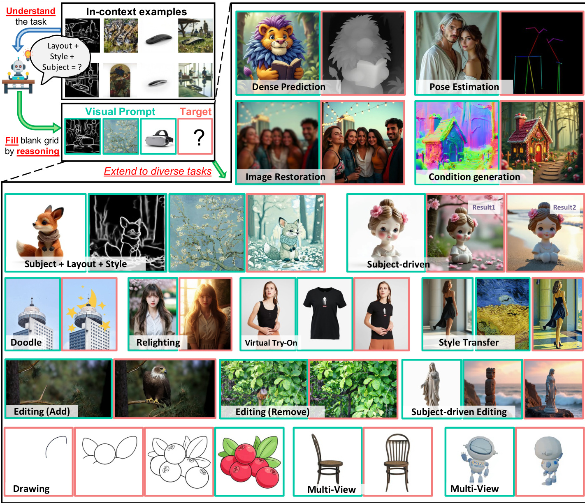
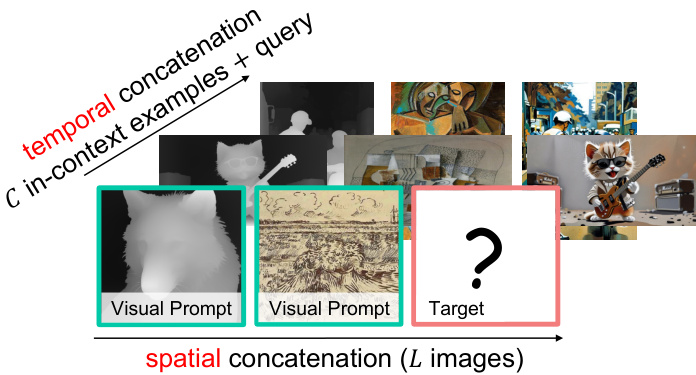
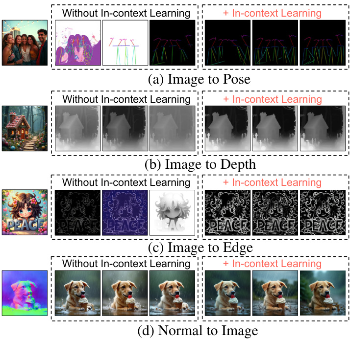
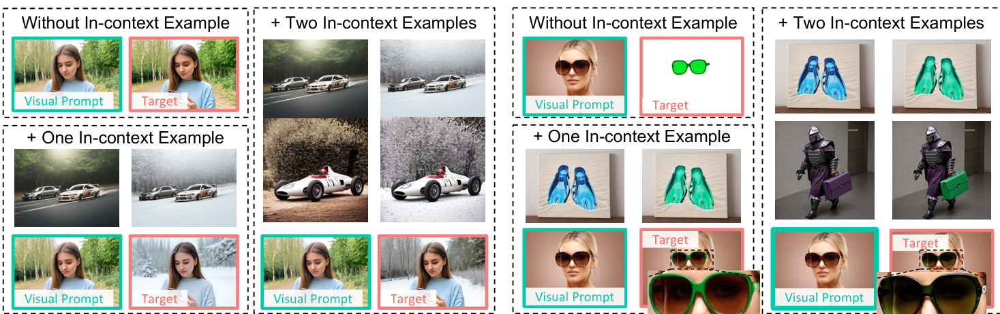
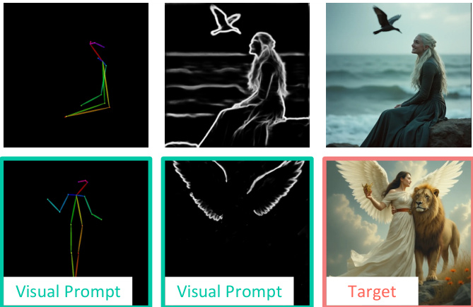
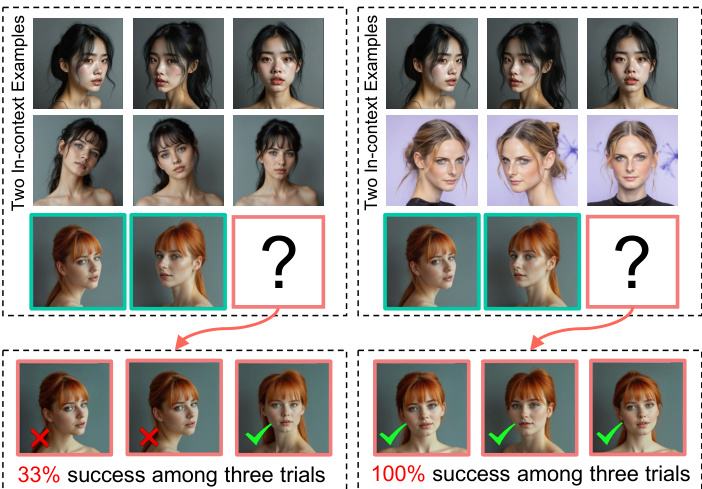
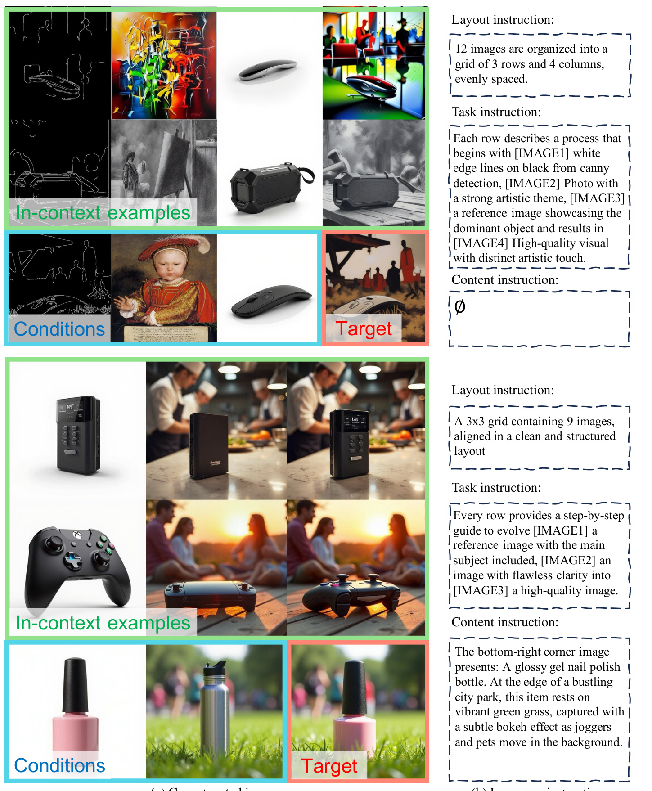
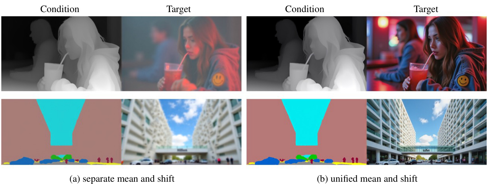

VisualCloze: A Universal Image Generation Framework via Visual In-Context Learning
None
Abstract
このアブストラクトでは、近年の拡散モデルの目覚ましい進展を踏まえつつ、現在の画像生成における主流アプローチが抱える課題を指摘します。そして、これらの課題を解決するために提案された新しい普遍的画像生成フレームワーク「VisualCloze」について、その核心的なアイデアと主な特徴を解説します。
拡散モデル（Diffusion Models）の最近の進歩は、様々な画像生成タスクを大きく前進させました。これにより、非常にリアルで高品質な画像を生成することが可能になっています。
拡散モデルとは、データに徐々にノイズを加えていき（拡散過程）、その逆の過程（逆拡散過程）を学習することで、ノイズから新しいデータを生成するモデルの一種です。特に画像生成分野で高い性能を示しています。
しかし、現在の主流アプローチは、依然としてタスク特化モデル（task-specific models）の構築に焦点が当てられています。これらのモデルは特定のタスク（例：顔画像の生成、風景画の生成など）には非常に優れていますが、
タスクBモデル タスクB成果
広範囲の異なるニーズをサポートする際には効率が限られるという問題があります。
ユニバーサルモデル（universal models）は、この限界に対処しようとする試みです。つまり、一つのモデルで多様なタスクを処理することを目指しています。しかし、これらのユニバーサルモデルも、いくつかの重要な課題に直面しています。
- 汎用的なタスク指示 (Generalizable task instruction): モデルに「何をしてほしいか」を曖昧さなく、かつ様々なタスクに応用できるように伝える方法。言語だけでは限界があることも。
- 適切なタスク分布 (Appropriate task distributions): 多種多様なタスクをモデルが効率よく学習し、それらの間で知識を転移できるようにするためのタスクの組み合わせや提示方法。
- 統一されたアーキテクチャ設計 (Unified architectural design): 様々な種類の入力と出力を扱え、かつ効率的に学習・推論できる単一のモデル構造。
これらの課題に取り組むために、本論文では「VisualCloze」という新しい普遍的な画像生成フレームワークを提案します。
VisualCloze は以下の能力をサポートします：
広範な
ドメイン内タスク
未知タスクへの
汎化能力
複数タスクの
未知の統合
逆生成
(結果から条件を推定)
アプローチ1: 視覚的文脈内学習 (Visual In-Context Learning)
既存の手法は、タスク指示に言語ベースの指示に依存していることが多く、これがタスクの曖昧さや汎化性能の低下を引き起こす一因でした。
VisualClozeでは、この問題を解決するために視覚的文脈内学習（visual in-context learning）を統合します。これにより、モデルはいくつかの視覚的なデモンストレーション（お手本画像）からタスクの内容を直接学習し、識別することができます。
お手本 (Context Examples):
➡️➡️ ➡️➡️新しい入力 (Query):
➡️VisualClozeによる生成:
➡️➡️✨少数の視覚的な「お手本」（コンテキスト例やデモンストレーション）をモデルに提示することで、実行すべきタスクをモデル自身に理解させ、新しい入力（クエリ）に対しても同様の処理（画像生成や変換）を適応させる学習パラダイムです。これにより、明示的な言語指示なしに、またはそれを補完する形でタスクを遂行できます。
アプローチ2: Graph200K データセット
従来の視覚タスクの学習では、各タスクのデータが独立していて関連性が薄い「タスク分布の固有の疎性（inherent sparsity）」が問題でした。これにより、タスク間で共通する転移可能な知識の学習が妨げられていました。
この課題に対処するため、VisualClozeでは「Graph200K」という新しいデータセットを導入します。
(相互に関連付けられたタスク群)
これは、様々な相互に関連するタスクを確立するグラフ構造のデータセットであり、タスク間の密度を高め、転移可能な知識の学習を強化します。
画像生成における多種多様なタスク（例：特定の物体を描く、写真のスタイルを変える、ノイズを除去する等）の学習用データが、それぞれ独立して存在し、互いの関連性や共通性が乏しい状態を指します。これにより、あるタスクで学習した知識を他のタスクに応用することが難しくなります。
本研究で提案される、グラフ構造を持つ大規模なデータセットです。各画像データに対して、条件生成、画像修復、画像編集、IP保存（特定のアイデンティティや特徴の保持）、スタイル変換といった複数の「メタタスク」の注釈が関連付けられています。この構造により、タスク間の関連性を密にし、モデルがタスク横断的な知識（転移可能な知識）を効率的に学習することを目指しています。
アプローチ3: 統一アーキテクチャと画像修復モデルの活用
さらに、本研究では、提案する統一された画像生成の定式化（タスクの表現方法）が、既存の画像修復（image infilling）タスクと一貫した目的を共有していることを見出しました。
この発見により、VisualClozeは、事前学習済みの画像修復モデルが持つ強力な生成的プライヤー（generative priors）を、アーキテクチャを変更することなくそのまま活用できます。
VisualClozeのタスク:
条件画像1 条件画像2 ? (生成対象)画像修復タスク:
既知領域1 既知領域2 □ (修復対象)画像の一部分が欠損している（マスクされている）場合に、その欠損部分を周囲のコンテキストに基づいて自然に補完するタスクです。VisualClozeでは、この画像修復の枠組みを一般化し、様々な画像生成タスクに応用します。
モデルが学習過程で獲得した、データがどのように生成されるべきかに関する「事前知識」や「傾向」のことです。例えば、画像生成モデルであれば、自然な画像がどのような特徴（テクスチャ、構造、色分布など）を持つべきかという知識を指します。強力な生成的プライヤーを持つモデルは、より高品質で現実的な画像を生成する傾向があります。
結論として、VisualClozeは...
視覚的文脈内学習 + Graph200Kデータセット + 画像修復モデルの活用
これにより、タスク指示の曖昧さを減らし、未知タスクへの汎化能力を高め、多様な画像生成タスクを統一的に扱うことを可能にするフレームワークです。
1. Introduction
このセクションでは、論文の導入部分として、本研究の背景、目的、そして提案するフレームワークの概要について解説します。画像生成技術の現状の課題を明らかにし、それらを解決するためのアプローチとしてVisualClozeという新しいフレームワークを提案するに至った経緯を説明します。
このセクションの主な目的と論旨
本研究の導入部では、まず近年の画像生成技術の目覚ましい発展、特に拡散モデル (Diffusion Models)の貢献について触れます。これらの技術は多岐にわたる応用を生み出していますが、既存の手法は特定のタスクごとに専用のモデルが必要となるケースが多く、効率性や拡張性の面で限界があります。
そこで、多様な画像生成タスク、さらには学習データに含まれない未知のタスクでさえも、単一の統一されたフレームワークで扱える「汎用生成モデル」への関心が高まっています。しかし、このような汎用モデルを実現するには、以下の3つの大きな課題が残されています：
- 識別可能で汎用的なタスク指示方法：モデルに「何をすべきか」を明確かつ柔軟に伝える方法。
- 訓練時の包括的なタスクカバレッジ：多様なタスクを学習するための、広範で密なデータ。
- 統一されたモデルアーキテクチャ：様々なタスクに対応できる単一のモデル構造。
本論文では、これらの課題に取り組むためにVisualClozeという新しいフレームワークを提案します。VisualClozeは、視覚的な文脈内学習 (Visual In-context Learning)、グラフ構造化データセット (Graph200K)、そして画像修復 (Image Infilling) モデルの活用という3つの主要なアイデアを組み合わせています。
用語解説：拡散モデル (Diffusion Models)
拡散モデルとは、データに徐々にノイズを加えていき、その逆の過程（ノイズからデータを復元する過程）を学習することで、新しいデータを生成するモデルの一種です。特に画像生成の分野で非常に高品質な結果を出すことで知られ、近年の画像生成技術の発展を牽引しています [15, 33, 88]。
(元画像) (ノイズ付加) (ノイズ除去学習) (生成画像)
拡散モデルの進歩により、画像編集 [69]、スタイル変換 [64, 81]、バーチャルトライオン [11, 12]、個人化生成 [38, 54] など、幅広い応用が可能になりました。しかし、これらのタスクは通常、タスク特化モデルを必要とし、これが実世界のアプリケーションにおける効率性とスケーラビリティを制限しています。
近年、汎用生成モデル (Universal Generative Models) [27, 39, 44] への関心が高まっており、これらは多様な画像生成タスク、さらには未知のタスクでさえも、単一の統一されたフレームワーク内で処理することを目指しています。大きな進歩があったものの、いくつかの重要な課題が残されています。具体的には、(1) 識別可能で汎用的なタスク指示、(2) 訓練中の包括的なタスクカバレッジ、そして(3) 統一されたモデルアーキテクチャです。
課題1：識別可能で汎用的なタスク指示
モデルが望ましいタスクを効果的に処理するためには、理想的なタスク指示が不可欠です。既存の手法は主に、実行するタスクを区別するために言語指示 [27, 44] やタスク特化トークン [39] に依存しています。
しかし、視覚タスクの複雑さと、視覚と言語モダリティ間の固有のギャップにより、モデルが言語のみのタスク記述を理解することは困難です。これはタスク混同 (Task Confusion) [39] を引き起こし、未知タスクへの汎化を妨げます [35, 71]。さらに、事前に学習されたタスク特化トークンは、モデルを既知のタスクの処理のみに制約します。
提案：視覚的In-context Learning
これに対し、大規模言語モデル (LLMs) は、In-context Learning (文脈内学習) [5] の台頭もあって、統一されたマルチタスクモデリングに成功しています。In-context Learningは、モデルが少数のデモンストレーション（文脈内事例）を用いるだけで様々なタスクに適応できるようにするものです。
本研究では、このIn-context Learningの概念を純粋な視覚モダリティで再現することを目指します。つまり、モデルがタスクデモンストレーションとして提示された少数の視覚的実例から直接望ましいタスクを学習するようにします（下図 Fig. 1 左上部参照）。
図1: VisualClozeフレームワークと視覚的In-context Learning。(左上) 汎用画像生成フレームワークが、特定のタスクのクエリに対し、デモンストレーションとして提示された少数の文脈内例を観察することでタスクを学習する様子。各タスクの生成結果は赤枠で示される。
この設定において、In-context Learningは汎用画像生成に対して強力な可能性を示します。我々はこのアプローチに関する4つの主要な発見をまとめました：
発見1
タスクの曖昧さを低減し、様々なドメイン内タスクをサポートします (Fig. 1)。
発見2
未知のタスクへも汎化します (Fig. 2, Fig. 8)。
発見3
タスク統合のための未知の戦略として、複数のサブタスクを単一ステップに統合し、中間結果を生成できます (Fig. 3)。
発見4
逆生成 (Reverse Generation)、つまり与えられたターゲットから一連の条件を推論することを可能にします (Fig. 9)。
過去の研究 [1, 3, 4, 43, 66, 71, 82] も視覚におけるIn-context Learningを探求していますが、それらは主に密な予測 (dense prediction) やスタイル変換 [67, 87] のような特定のドメインに制約されているか、または単一の条件と単一のターゲット画像のみを含む単純化された生成設定 [43, 60] に限られています。
用語解説：In-context Learning (文脈内学習)
モデルが実行時に少数のタスク例（プロンプトやデモンストレーションと呼ばれる）を与えられることで、そのタスクのパターンを「文脈から」学習し、新しい入力に対して同様の処理を行う能力のことです。特に大規模言語モデル (LLM) でその有効性が示されています。本論文では、これを視覚情報に応用します。
例2: 入力B 出力B'
モデルが推論 出力C'

図2: 未知タスク ♦ : In-context Learning を介して訓練中に見たことのないタスクに汎化する。より多くの文脈内例がより正確な結果につながる。

図3: 未知タスク ♣ : In-context Learning を活用して、複数の既知タスクを単一ステップの未知タスクに統合する。左: [深度から画像へ] と [再照明] タスクを単一の [様々な照明を持つ深度から画像へ] タスクに統合。右: 複数の密予測タスクを共同予測タスクに統合。視覚的文脈なしの結果は付録参照。
課題2：訓練時の包括的なタスクカバレッジ (タスク分布のスパース性)
タスク分布の観点から見ると、視覚タスクは自然言語処理 (NLP) のタスクと比較して本質的にスパース (疎) です。これは、異なるタスクのためのタスク特化データセット [71, 85] が最小限の重複しか持たないためです [19, 32, 79]。
このようなスパースなタスク学習は、各タスクの知識を分離させ、モデルがタスク間で共有される特徴を学習することを制限します。さらに、タスク間の相関が弱いことが、知識の転移や新しいタスクへの適応性を妨げます。しかし、マルチタスク学習における既存の研究 [10, 16, 31, 53] は、関連タスク間で知識を重複させることの利点を検証しています。
提案：Graph200K データセット
視覚タスクのスパース性を緩和するために、我々はGraph200Kというグラフ構造のデータセットを導入します。このデータセットでは、各画像が5つのメタタスク (Meta-tasks) にまたがるアノテーションと関連付けられています。具体的には、
- 条件付き生成 (Conditional Generation) [80]
- IP保存 (IP Preservation) [76]
- スタイル変換 (Style Transfer) [81]
- 画像編集 (Image Editing) [69]
- 修復 (Restoration) [77]
異なる条件を組み合わせることで、我々はモデルを互いに重複する多様なタスクで訓練します。この非常に重複したコンパクトなタスク空間により、我々のデータセットはタスク密度を大幅に増加させ、モデルが共有可能で転移可能な知識をより効果的に学習できるようにします。
課題3：統一されたモデルアーキテクチャ
アーキテクチャ設計においては、以下の2点が不可欠です：
提案：画像修復モデルの活用
本研究では、最先端の画像修復 (Image Infilling) モデル [33] が、我々のIn-context Learningベースの汎用生成定式化と一貫した目的を持つことを見出しました。
具体的には、すべての入力画像と出力画像を連結し、タスクの目的を出力領域を埋めることとします。この整合性により、追加の変更なしに高度な汎用修復モデル上に我々のモデルを構築することが可能となり、最小限のデータと訓練コストで強力な汎用生成能力を達成します。
(入力画像群) + (空の出力領域) (画像修復タスクとして解決)
VisualCloze フレームワークの概要
本研究では、VisualClozeという汎用画像生成フレームワークを提案します。これは、FLUX.1-Filldev [33] をGraph200Kからサンプリングされた相互関連タスクでファインチューニングすることにより、転移可能な知識を学習し、視覚的In-context Learningをサポートします。
In-contextの例の数が増えるにつれて、パフォーマンスの向上とタスク混同の低減が観察され、モデルは条件付き生成、画像修復、編集、スタイル変換、IP保存、およびそれらの組み合わせを含む広範なドメイン内タスクをサポートできるようになります。
未知のタスクにおいても、モデルはある程度の汎化能力を示します (Fig. 2)。
主な貢献 (Main Contributions)
汎用フレームワークの提案
広範なドメイン内タスクをサポートし、未知のタスクへの汎化を示す、In-context Learningベースの汎用画像生成フレームワークを提案します。
Graph200Kデータセットの設計
コンパクトなタスク空間を構築するグラフ構造のデータセットGraph200Kを設計し、柔軟なオンラインタスクサンプリングを可能にし、モデルがタスク間で共有可能で転移可能な知識を学習することを促進します。
統一された生成定式化
我々の統一された画像生成定式化は、最先端の修復モデルと一貫した目的を共有しており、構造を変更することなく最小限のチューニングで優れたパフォーマンスを実現します。
2. Related Work
このセクションでは、本研究「VisualCloze」がどのような背景のもとに提案されたのかを理解するために、関連する既存の研究について解説します。主に、画像生成技術の進展と、視覚的文脈内学習 (Visual In-context Learning) という学習パラダイムに焦点を当て、それぞれの分野での現状の成果と課題を明らかにします。そして、本研究がこれらの課題にどのように取り組み、どのような新しい貢献を目指しているのかを明確にします。
このセクションの目的
- ✏️ 画像生成分野と視覚的文脈内学習分野の主要な研究動向を概観する。
- ✏️ 既存研究の限界や課題を指摘する。
- ✏️ 本研究「VisualCloze」の位置づけと新規性を明らかにする。
2.1. Image Generation
近年、テキスト記述から画像を生成する技術は目覚ましい進歩を遂げています。この発展は、主に2つのタイプのモデルによって牽引されてきました。
自己回帰モデル (Autoregressive Models)
画像をピクセル単位で順番に生成していくモデルです。例えば、Transformerベースのモデルなどがこれに該当し、高品質な画像を生成できますが、生成に時間がかかる傾向があります。 (例: [41, 58, 78])
拡散モデル (Diffusion Models)
ノイズから徐々に画像を生成していくモデルです。近年非常に高い性能を示しており、多くの研究で採用されています。 (例: [2, 13, 15, 18, 24, 40, 42, 48, 51])
これらのモデルの中でも、Rectified Flow Transformer [15, 17, 33, 88] は、学習効率と全体的な性能の高さで注目されています。これらの基礎モデルをベースとして、様々な応用技術が登場しています。
条件付き生成 (Conditional Generation) [80]
テキストだけでなく、スケッチやセグメンテーションマップなど、様々な条件に基づいて画像を生成します。
スタイル変換 (Style Transfer) [64]
ある画像のスタイルを別の画像に適用します。
個人化生成 (Personalized Generation) [38]
特定の人物や物体の画像を生成します。
📝 ユニバーサルモデルへの挑戦
最近では、これらの多様なタスクを単一のモデルで処理しようとするユニバーサルモデル (Universal Models) [35, 44, 83] の研究が進められています。例えば、
- OmniGen [71]: 大規模視覚言語モデルを活用し、複数のタスクを単一フレームワークに統合。
- UniReal [9]: 画像生成タスクを不連続な動画生成として統一。
既存ユニバーサルモデルの課題
しかし、これらのユニバーサルモデルはいくつかの課題に直面しています。
- 言語指示への過度な依存: タスクの指示を言語に頼りすぎているため、複雑な視覚タスクのニュアンスを捉えきれない場合があります。
- 視覚タスクの分離と疎性: 各視覚タスクが独立しており、タスク間の関連性が薄いため、知識の転移が難しい。
- 柔軟なタスク形式に対応するアーキテクチャ設計: 多様な入力形式やタスク要求に柔軟に対応できる統一的なモデル構造が求められています。
本研究のアプローチ
これらの課題に対処するため、本研究では、画像生成タスクを画像インフィル（穴埋め）として統一する新しいユニバーサル画像生成フレームワーク「VisualCloze」を提案します。 具体的には、
これにより、多様なドメイン内タスクをサポートし、訓練時には学習していない未知のタスクに対しても高い汎化性能を発揮することを目指します。
2.2. Visual In-context Learning
文脈内学習 (In-context Learning) [14] は、大規模言語モデル (LLM)、例えばGPT-3 [5] の登場とともに注目されるようになったアプローチです。これは、モデルにいくつかのデモンストレーション（例示）を与えることで、複雑なタスクを理解し実行させる手法です。
用語解説：文脈内学習 (In-context Learning)
モデルが少数のタスク例（文脈）を入力として受け取り、その文脈からタスクのパターンやルールを推測し、新しい入力に対して同様のタスクを実行する能力のことです。ファインチューニングなしに新しいタスクに適応できる点が特徴です。
視覚分野（Vision Modality）における初期の研究 [21, 22] では、画像アナロジー (Image Analogies) という形で、例から自動的に画像フィルタを作成する試みがありました。近年では、以下の技術を活用して、より多くのタスクに対応する視覚的文脈内学習 (Visual In-context Learning) が提案されています。
既存の視覚的文脈内学習の限界
しかし、これらの研究は主に以下の点に限定されていました。
- 密な予測 (Dense Prediction) [55, 59, 87]: 画像の各ピクセルに対して値を予測するタスク（例：セグメンテーション、深度推定）。
- 視覚理解 (Visual Understanding) [63]: 画像の内容を理解するタスク（例：物体認識、キャプション生成）。
OmniGen [71] は文脈内学習を活用して、訓練時に学習したセグメンテーションタスクを未知の概念に対しても汎化させることを試みていますが、これも主に単純な密な予測タスクに焦点が当てられており、未知のドメインと訓練ドメイン間のギャップは依然として限定的です。
画像生成への応用 [34, 43, 60, 68] も試みられていますが、条件付き生成や密な予測といった比較的単純なタスクに限定されています。
視覚タスクの疎性の問題
さらに重要な課題として、視覚タスクの疎性 (Sparsity of visual tasks) が挙げられます。これは、異なる視覚タスク間で知識を転移させたり、共通の知識を学習したりすることが難しいという問題です。タスクがまばらに存在しているため、モデルはタスク間で重複する知識を獲得しにくく、これが文脈内学習による画像生成能力を制限する一因となっています。
本研究の貢献：Graph200Kデータセット
この課題に対し、本研究ではGraph200Kというグラフ構造のデータセットを導入します。このデータセットは、相互に関連する多数のタスクをサポートすることで、より密なタスク空間 (Dense Task Space) を構築します。これにより、モデルはタスク間で共有可能かつ転移可能な知識を効率的に学習し、適応性を大幅に向上させることが期待されます。
図4: 提案するGraph200Kデータセットの図解
図4の解説
この図は、本研究で提案されているGraph200Kデータセットの構造を示しています。
- 📌 中心画像 (Image): データセットの中心となる元画像です。図では王冠の画像が例として示されています。
- 📌 5つのメタタスク (Meta-tasks): 各中心画像には、以下の5つの主要なタスクカテゴリ（メタタスク）に関連するアノテーションが付与されます。
- 条件付き生成 (Conditional Generation): 特定の条件（例：深度マップ、エッジ画像）から画像を生成するタスク。図では、深度情報やセグメンテーションマップなどが示されています。
- 画像修復 (Image Restoration):劣化した画像（例：ノイズ除去、ブレ除去）を高品質な画像に復元するタスク。図では、ぼやけた画像や線で隠された画像などが示されています。
- 画像編集 (Image Editing):画像の一部を変更・修正するタスク。図では、蝶や木が追加されたり、オブジェクトが変化したりする例が示されています。
- IP保存 (IP Preservation): 特定の物体やキャラクター（Intellectual Property）の特徴を保持したまま画像を生成・編集するタスク。図では、参照画像 (Reference)として王冠の画像が示されており、これを基にスタイルを適用する例などを示唆しています。
- スタイル変換 (Style Transfer): ある画像のスタイルを別の画像に適用するタスク。図では、絵画風のスタイルなどが示されています。
- 📌 タスクの組み合わせ (Combining diverse tasks): 図の下部では、これらのメタタスクやアノテーションを組み合わせることで、より複雑で多様なタスクを構築できることが示されています。例えば、「被写体 (subject) + レイアウト (layout) + スタイル (style) = スタイル化 (stylization)」といった具体的な組み合わせ例が挙げられています。これは、王冠（被写体）を特定の構図（レイアウト）で、絵画風（スタイル）の画像として生成するタスクを意味します。
このようにGraph200Kデータセットは、多様なアノテーションを関連付けることで、タスク間の関係性を密にし、モデルが汎用的な画像生成能力を獲得するための基盤となります。
3. Dataset
このセクションでは、論文で提案するVisualClozeフレームワークの学習に使用するデータセットについて詳しく説明します。特に、既存の画像生成研究における課題、すなわちタスクのスパース性（まばらさ）と分離性がモデルの汎化能力（未知のタスクへの対応能力）を制限しているという問題意識から出発します。この問題を解決するために、タスク間の関連性を強化し、タスク密度を高めることを目的とした新しいデータセットGraph200Kを構築します。
主な目的と論旨
従来の統合画像生成モデルは、学習データに含まれない未知のタスクへの汎化能力に限界がありました。これは、学習に使われる個々の視覚タスクがまばらに存在し、互いに孤立しているため、モデルがタスク間で共通する特徴を学習したり、未知のタスクに対応したりするのが難しいことが一因と考えられます。また、タスク間の関連性が弱いと、知識の転移が妨げられ、モデルの適応性が制限されます。
そこで本研究では、タスク密度を高める、あるいはタスク間の相互関係を強化することで、コンパクトなタスク分布を通じてモデルの汎化能力を向上させることを目指します。Subject200K[61]データセットを出発点とし、各画像に対して5つのメタタスクにまたがる49種類のアノテーションを付与することで、Graph200Kデータセットを構築します。この豊富なアノテーション空間により、図4に示すように、異なるメタタスク間でアノテーションの任意の部分集合をサンプリングし組み合わせることで、広範囲の関連タスクを柔軟に構築できます。
図4: 提案するGraph200Kデータセットの図解
各画像は、条件付き生成、画像修復、画像編集、IP保存、スタイル転送という5つのメタタスクのアノテーションが付与されます。
これらのタスクを利用して、図の下部のように、広範囲の複雑なタスクを組み合わせることができます。
3.1. Graph-Structured Multi-Task Dataset
自然言語処理（NLP）の分野では、タスク同士が大きく重複しているため、強力なクロスタスク学習能力（複数のタスクを同時に学習する能力）が促進されます。しかし、視覚タスクは本質的にそれぞれが異なっているため、視覚モデルがインストラクションチューニング（指示に従って学習する手法）を通じて同様の汎化能力を達成することは困難です。
この問題を緩和するために、本論文ではGraph-Structured Multi-Task Dataset (グラフ構造化マルチタスクデータセット)を導入します。
データセットの構造イメージ (図4 (a)参照)
中心ノード: 各画像
周辺ノード: 多様なタスクアノテーション
- 様々な空間条件
- 画像の劣化
- 画像編集結果
- IP保存用参照画像
- スタイル転送 (多様な参照スタイル)
各タスクペアの構築プロセスについては、次のセクションで詳しく説明します。
図4に示されるように、各タスクアノテーションは画像と双方向のエッジ（つながり）を形成します。これにより、グラフは強連結であると言えます。これは、グラフ内の任意の2つのノード（例えば、あるアノテーションと別の画像、または2つの異なるアノテーション）間に、双方向の経路が存在することを意味します。
生成タスクの新しい捉え方
このグラフ構造において、画像生成タスクはグラフ内のパス（経路）として定式化できます。
- パス上のノード（終点ノードを除く）：条件画像として機能します。これは、インストラクションファインチューニングにおける「質問」に類似しています。
- パスの終点ノード：ターゲット画像（生成したい画像）であり、「回答」の役割を果たします。
例えば、図4の下部に示されているように、「reference editing image」というパスは、参照画像を用いた画像編集タスクに対応します。
具体的には、私たちのGraph200Kデータセットには49種類のノードがあり、最大で134個の高度に重複するタスクをサンプリングします。これにより、モデルはタスク間でよりコンパクトで共有された表現を学習することが可能になります。さらに、これは私たちのインストラクションファインチューニングデータの多様性と柔軟性を豊かにします。
3.2. Dataset Construction
データ構築の便宜上、Subject200K[61]データセットから被写体主導のデータを継承しています。さらに、画像修復データを取得するために、画像に対して32種類の異なる劣化 (degradations) をオンライン（学習処理中）で適用します。
このセクションでは、残りの3つの主要タスク（条件付き生成、スタイル転送、画像編集）に関するデータ構築方法をまとめます。
Conditional generation (条件付き生成)
ControlNet [80] の手法に倣い、各画像は専門モデルによって生成された12種類の異なる条件とペアリングされます。これらの条件には以下のようなものが含まれます：
本研究では、これらの条件をさらに拡張し、以下を組み込んでいます：
詳細
前景セグメンテーションはRMBG [84]から派生し、インペインティング（部分的な画像の修復・補完）や前景抽出などの多様なタスクをサポートします。オープンワールドのバウンディングボックスは、Qwen2-VL [65]のグラウンディングキャプション能力（テキスト記述に基づいて画像内の領域を特定する能力）を通じて生成され、これらはSAM2 [50]を使用して対応するマスクを生成するために処理されます。
Style transfer (スタイル転送)
参照画像に基づいて、セマンティックバリアント（意味内容が変化する）設定とセマンティックインバリアント（意味内容を保持する）設定の両方で画像のスタイルを転送します。
Semantic-invariant (意味内容保持)
InstantStyle [64] を採用し、意味内容を保持します。
Semantic-variant (意味内容変化)
FLUX.1-Redux-dev [33] に依存し、スタイル埋め込みと深度を条件として使用します。
各画像に対して、ランダムに5つのスタイル化されたバージョンを生成します。
重要ポイント
これら2つのタスク（意味内容保持と変化）を混合することで、モデルが曖昧さを避け、文脈内例（in-context examples）により良く従うように促します。
Image editing (画像編集)
2種類の編集タスクを設計します：背景バリアント（背景が変化する）編集と背景インバリアント（背景を保持する）編集です。
背景インバリアント編集:
- 1 被写体の位置を特定します。
- 2 大規模視覚言語モデルQwen2-VL [65]を活用し、元の被写体を新しいオブジェクトに置き換えるように画像キャプションを修正します。
- 3 被写体がマスクされた画像を、FLUX.1-Fill-dev [33]インペインティングモデルで処理し、代替オブジェクトをマスク領域に統合します。
- 4 データセットを豊かにするために、上記の操作を5回繰り返します。
背景バリアント編集:
違いは最後のステップにあり、深度を条件とし、修正されたキャプションをテキストプロンプトとしてFLUX.1-Redux-dev [33]を利用します。
3.3. Other Data
タスクの範囲をさらに拡大し、モデルの汎化能力を向上させるために、トレーニング中にいくつかのオープンソースデータセットを組み込みます。
VITON-HD [11]
バーチャル試着タスク用
PhotoDoodle [28]
芸術的な画像編集タスク用
OmniEdit [69]
画像編集タスク拡張用
OmniEdit [69] の詳細
特に、以下の2つのサブタスクをトレーニングに使用します：
- オブジェクト追加
- オブジェクト削除
他の編集タスク（例：属性変更、環境変更など）は、訓練されたモデルの汎化能力を評価するための未見タスクとして扱います。
さらに、高品質な内部データの一部も活用します。これには以下のタスクが含まれます：
これらの追加データにより、モデルがより多様なシナリオに対応し、ロバストな汎化性能を獲得することを目指します。
4. Method ~手法~
この論文では、汎用的な画像生成モデルを構築する上での核心的な課題を特定しています。具体的には、以下の3点が挙げられます。
明確で一般化可能なタスク定式化の必要性
様々なタスクを統一的に扱えるような、明確な「問題設定」の方法が求められます。
視覚タスクのスパース性 (疎性)
視覚タスクのデータは関連性が薄く散在しがちで、これがモデルの学習効率を下げます。（これは前セクションでGraph200Kデータセットの構築により対処されました。）
マルチタスク学習のための統一フレームワークの欠如
複数のタスクを効率よく学習できる、一貫したモデル構造が必要です。
このセクションでは、これらの課題に取り組むための具体的な手法を提案します。
- ✏️ セクション4.1では、視覚的インコンテキスト学習 (Visual In-context Learning) を、汎用的なタスク定式化のための理想的なパラダイムとして導入します。
- ✏️ セクション4.2では、画像修復 (Image Infilling) モデルを統一的なマルチタスクフレームワークとみなし、最小限のコストで強力な汎化能力を達成する方法を説明します。
4.1. Visual In-context Learning ~視覚的インコンテキスト学習~
単一の生成モデルで複数の視覚生成タスクを扱うために、従来は言語指示 (Language Instructions) を使ってタスクの定義を指定するのが一般的でした。しかし、このアプローチにはいくつかの課題があります。
言語指示の限界
- 視覚と言語のギャップ: 視覚的なニュアンスを言語だけで完全に表現するのは難しい。
- モデルのテキスト理解能力の限界: 画像生成モデルのテキスト解釈能力はまだ発展途上。
- タスク混同 (Task Confusion): どのタスクを実行すべきかモデルが混乱しやすい。[39]
- 未知タスクへの汎化能力の弱さ: 学習データに含まれない新しいタスクへの対応が苦手。
そこで、この研究では大規模言語モデル (LLM)における少数ショット学習 (Few-shot Learning) [5] の成功に着想を得て、視覚的コンテキストが視覚生成モデルにとってより直感的で理解しやすいタスク指示となり得ると考えました。なぜなら、画像生成モデルは元来、優れた視覚理解能力を持っているからです。
💡 アイデアの核心: モデルに「やってほしいこと」を言葉で説明するのではなく、「お手本」となる視覚的な例 (Visual Demonstrations) を見せることでタスクを理解させる、というアプローチです。
この論文では、汎用的で一般化可能な画像生成システムを構築するために、視覚的インコンテキスト学習 (Visual In-context Learning) を再提案します。
用語定義: クエリ (Query)
説明を簡単にするため、任意の条件付き生成タスクの画像入出力をクエリとして定義します。クエリは以下から構成されます：
- 条件画像群: \(L-1\) 個の条件画像 (\(x_1, \dots, x_{L-1}\))。これらがタスクの入力となります。
- 空白ターゲット: モデルが補完・生成すべき空白の領域 (\(\emptyset\))。これがタスクの出力となります。
クエリ \(X\) は、これらを連結したものとして表現されます：
\(X = \operatorname { c o n c a t } ( \{ x _ { 1 } , \dots , x _ { L - 1 } , \emptyset \} ) \)
📌 ここで \(L\) は、1つのタスク例（クエリまたはインコンテキスト例）に含まれる画像の総数（条件画像＋ターゲット画像）です。
拡張性について
この手法は、クエリの最後に1枚の画像を生成するだけでなく、より一般的なシナリオ（例えば、任意の位置に任意の数の画像を生成する）にも拡張可能です。これについては、論文のセクション5.1で詳しく説明されています。
訓練時には、モデルにタスクの「お手本」として、最大 \(C\) 個のインコンテキスト例 (In-context Examples) をランダムに提供します。各インコンテキスト例も、クエリと同様に \(L\) 個の画像（条件画像群と対応する正解のターゲット画像）を含んでいます。
訓練戦略の目的
このランダムな数のインコンテキスト例を提供する戦略は、モデルが様々な数の「お手本」に対応できる汎化能力を身につけることを保証します。つまり、お手本が1つの場合でも、複数の場合でも、あるいは全くない場合でも、モデルが適切に動作することを目指します。
実験結果から、インコンテキスト例をタスクのデモンストレーションとして提供することには、以下のような効果があることが示されています：
- ✅ タスク混同の軽減: モデルが実行すべきタスクをより明確に理解できるようになります。
- ✅ ドメイン内タスクのパフォーマンス向上: 学習データに含まれるタスク（既知のタスク）に対する精度が向上します。[39]
- ✅ 未知タスクへの汎化能力向上: 学習データに含まれない新しいタスクへの対応能力が向上します。
📌 図5: 位置埋め込みを適用する際の画像の連結方法
図5の解説
この図は、アスペクト比が異なる可能性のある複数の画像をどのように連結し、それらに位置埋め込み (Positional Embedding)を適用するかを示しています。位置埋め込みは、画像内の各部分の位置情報をモデルに伝えるために重要です。
- ステップ1: 水平方向の連結
まず、\(C\) 個のインコンテキスト例とクエリに含まれるそれぞれの \(L\) 個の画像（条件画像とターゲット画像）を、各例・クエリごとに水平方向（横方向）に連結します。これにより、各タスク例が一つの長い横長の画像ストリップのようになります。
[画像1][画像2]...[画像L] (← 1つのタスク例) - ステップ2: 時間軸方向 (Temporal) の連結
次に、ステップ1で作成された複数の水平連結された画像ストリップ（各インコンテキスト例とクエリに対応するもの）を、時間軸方向 (temporally)、つまり垂直方向（縦方向）に連結します。この「時間軸方向」という表現は、画像シーケンスを扱う際の慣習に由来するもので、ここでは実質的に行として積み重ねることを意味します。これにより、アスペクト比の不一致という問題をうまく処理できます。
[例1: 画像1 ... 画像L]
[例2: 画像1 ... 画像L]
... (C個のインコンテキスト例) ...
[クエリ: 画像1 ... ∅]
このようにして、様々なタスク例を単一の大きなグリッド状の入力としてモデルに与えることができます。図中の「temporal concatenation」は行方向の積み重ね、「spatial concatenation」は列方向の連結を指しています。
例えば、図では上から順にインコンテキスト例が並び、一番下が現在のタスク（クエリ）です。各行（各タスク例）は、複数の画像（Visual Prompt = 条件画像、Target = 生成対象）が横に連結されています。
4.2. Unified Multi-task Framework ~統一マルチタスクフレームワーク~
従来の視覚的インコンテキスト学習手法の多く[43, 60]は、単一の画像条件と単一のコンテキスト（お手本）を持つシナリオに主に焦点を当てていました。しかし、この研究では、さまざまな数の条件やコンテキストを扱える統一的なフレームワークを構築し、多様なタスクに柔軟に適応することを目指します。
初期仮定: 画像サイズ
説明を簡単にするため、最初はモデルが処理するすべての画像のサイズが同じ (\(W \times H\)) であると仮定します。アスペクト比が異なる場合の対応については、このセクションの最後に説明します。
この仮定のもと、\(C\) 個のインコンテキスト例と1つのクエリがあり、それぞれが \(L\) 個の画像を含む場合を考えます。これらの画像はすべて、サイズが \((L \times W, (C+1) \times H)\) の完全なグリッドレイアウト画像に連結することができます。
🖼️ グリッドレイアウトのイメージ 🖼️
タテ: (C+1)行 (インコンテキスト例C個 + クエリ1個)
ヨコ: L列 (各タスク例内のL個の画像)
[例1: 画像1] [例1: 画像2] ... [例1: 画像L]
[例2: 画像1] [例2: 画像2] ... [例2: 画像L]
... (C個のインコンテキスト例) ...
[クエリ: 条件1] [クエリ: 条件2] ... [クエリ: ターゲット∅]
全体のサイズ: 幅 \(L \times W\) × 高さ \((C+1) \times H\)
このグリッドレイアウトにおいて、モデルは周囲のコンテキスト（既知の画像）に基づいてターゲットとなるグリッド（通常はクエリの最後の空白部分）を修復 (infilling) することでタスクを完了します。これは、まるで視覚的な穴埋め問題 (Visual Cloze Puzzles) を解くようなものです。そのため、この論文では、複数の解像度を扱える汎用的な画像修復アーキテクチャに基づいて、統一フレームワークVisualClozeを構築します。
VisualClozeモデルの定式化
一般的な拡散ベースの修復モデルの設計と一貫して、VisualClozeモデルは次のように定式化できます：
\( { \hat { X } } = f ( X \mid T , M ) \)
式 (1)
ここで、各要素の意味は以下の通りです：
- \(X\): 連結されたグリッド画像。最後のグリッド（ターゲット部分）は空白になっています。
- \(T\): 言語指示 (Language Instruction)。タスクの種類や生成内容に関するテキスト情報。
- \(M\): マスク条件 (Mask Condition)。どの部分を修復（生成）すべきかを示すバイナリ行列。
- \(\hat{X}\): 修復された結果の画像。
- \(f\): 画像修復モデル。
マスク \(M\) は、サイズが \((H \times (C+1), W \times L)\) のバイナリ行列（0か1の値を持つ行列）です。
\(M ( i , j ) = \left\{ \begin{array} { l l } { 1 } & { \mathrm { i f } \ i \in [ H \times C , H \times ( C + 1 ) ) } \\ & { \mathrm { a n d } \ j \in [ W \times ( L - 1 ) , W \times L ) , } \\ { 0 } & { \mathrm { o t h e r w i s e } , } \end{array} \right.\)
式 (2) (論文中のインデックス調整: C-1 → C, C → C+1)
論文中の数式(2)のインデックスについて補足
論文中の数式(2)では、行インデックスが \(i \in [H \times (C-1), H \times C)\) となっていますが、これは \(C\) 個のインコンテキスト例がある場合、最後の行（クエリ行）のインデックスが \(C\) 番目（0から数えると \(C-1\) 番目）であることを意味します。しかし、本文の説明ではインコンテキスト例が \(C\) 個あり、クエリが1つあるため、全体で \((C+1)\) 行となります。ターゲットは最後の行 (\(C+1\) 行目、0-indexedで \(C\) 行目) の最後の列 (\(L\) 列目、0-indexedで \(L-1\) 列目) にあるため、数式(2)の \(C-1\) は \(C\) に、 \(C\) は \((C+1)\) に読み替えるのが適切です。上記のHTMLではこの解釈で記述しています。
\(M(i,j)=1\) は、そのピクセルがマスクされ（隠され）、修復モデルによって生成されることを示します。数式(2)は、グリッド画像の最後の行（クエリ行）の最後の列（ターゲット画像の位置）の領域をマスクすることを意味します。
🧠 訓練時の工夫: リバース生成の促進
訓練中、VisualClozeはターゲット画像だけでなく、最初の \(L-1\) 個のグリッド（条件画像部分）のいずれか一つを確率0.5でランダムにマスクします。これは、モデルが「結果から原因を推測する」ようなリバース生成 (Reverse Generation)能力（セクション5.1で詳述）を獲得するのを助けます。
例えば、「猫の絵」と「スケッチ」から「リアルな猫の画像」を生成するタスクの場合、
- 通常: [猫の絵] [スケッチ] [空白] → [リアルな猫] を生成
- リバース生成の学習: [猫の絵] [空白] [リアルな猫] → [スケッチ] を生成、または [空白] [スケッチ] [リアルな猫] → [猫の絵] を生成
図: リバース生成の例 (論文Fig.9より引用・再構成)
推論時には、生成された大きなグリッド画像 \(\hat{X}\) からターゲット画像の部分を切り出すことで、目的の画像を簡単に得ることができます。
Aligned Optimization Objective ~整合した最適化目標~
この設計の重要な利点は、VisualClozeの定式化が、一般的な画像修復モデルと非常に整合性の高い最適化目標を共有していることです。しかも、アーキテクチャの変更や明示的な入力条件の追加は不要です。
この整合性により、以下が可能になります：
- ✅ 先進的な既存の画像修復モデルを、構築した新しいデータセット（Graph200K）で直接ファインチューニングできる。
- ✅ 基盤モデル（Foundation Model）が持つ事前知識を最大限に活用できる。
対照的に、既存のタスク特化型モデルでは、しばしば追加の学習可能なモジュールを導入したり[38, 69]、追加の条件入力に適応させたり[61]する必要があり、これはモデル本来の能力を損なう可能性があります。
Language Instructions ~言語指示~
VisualClozeにおいても、言語指示の設計は依然として必要です。その役割は以下の通りです：
1. レイアウト指示 (Layout Instruction) 📐
グリッド画像の \((C+1) \times L\) レイアウトを記述します（論文では \((C+1) \times W\) とありますが、列数はLが適切）。つまり、何行何列の画像グリッドなのかを伝えます。
2. タスク指示 (Task Instruction) 🎯
実行すべきタスクの種類を指定します。例えば、「画像を編集する」「スタイルを変換する」など。
3. コンテンツ指示 (Content Instruction) 📝
生成すべきターゲット画像の内容を記述します。例えば、「赤いリンゴのある静物画」など。これは、特にインコンテキスト例が利用できない場合にタスクの意図を特定するために重要です。
これらの指示の具体的な詳細については、論文の付録Aで説明されています。
式(1)における3つの構成要素 \(X\) (連結画像), \(T\) (言語指示), \(M\) (マスク) を再構成することにより、VisualClozeは、一般的な画像修復パラダイムを用いた画像生成のための統一マルチタスクフレームワークを実現し、インコンテキスト学習をサポートします。
Positional Embedding ~位置埋め込み~
前述の通り、すべての画像はグリッドレイアウト画像に連結され、この大きな画像に対して位置埋め込み (Positional Embedding)（例: RoPE [57]）を適用できます。これは、画像内の各パッチやピクセルの相対的または絶対的な位置情報をモデルに伝えるための重要な技術です。
しかし、アスペクト比が異なるインコンテキスト例からグリッド画像を構成する場合、潜在的な制約が生じます。単純に連結すると、歪みが生じたり、位置情報がうまく伝わらなかったりする可能性があります。
この問題に対処するため、VisualClozeは FLUX.1-Fill-dev モデルに実装されている 3D-RoPE (3次元ロータリー位置埋め込み) を活用します。具体的には、図5で示されているように、クエリとインコンテキスト例を時間軸方向 (Temporal Dimension) に連結します。これは、各タスク例（インコンテキスト例やクエリ、それぞれが水平方向に連結された画像列）を、あたかもビデオフレームのように積み重ねるイメージです。
💡 3D-RoPEによる解決
この3D-RoPEを用いることで、アスペクト比の異なる画像を効果的に処理し、性能を低下させることなくこの課題を克服します。時間軸方向の連結は、各画像ストリップ（1つのタスク例）を1つの「時間ステップ」として扱い、それらの間の順序関係と、各ストリップ内の空間的な位置関係の両方を捉えることができます。
これは図5で説明した連結方法と一致しており、インコンテキスト例とクエリの各行（L個の画像が水平連結されたもの）を縦に積み重ねることで、アスペクト比の不一致に対応します。
4.3. Implementation Details ~実装詳細~
このセクションでは、VisualClozeモデルの具体的な実装の詳細について説明します。
基盤モデル (Foundation Model)
FLUX.1-Fill-dev [33] を使用します。これは、オープンソースの画像修復モデルの中でも卓越した性能を持つため選ばれました。
ファインチューニング手法
モデル全体をファインチューニングするのではなく、LoRA (Low-Rank Adaptation) [25] を用いてファインチューニングを行います。これにより、以下の利点があります：
- 訓練コストの削減
- 基盤モデルの能力の維持
- 生成されたLoRAは、コミュニティの他のLoRAと融合可能で、より広範な応用が可能
LoRAのランク (rank) は 256 に設定しました。
訓練設定
- イテレーション数: 20,000回
- 累積バッチサイズ: 64
- 使用GPU: 8 × A100 GPU
- オプティマイザ: AdamW
- 学習率: \(1 \times 10^{-4}\) (1e-4)
- ノイズ戦略: FLUX.1-Fill-dev に倣い、動的時間シフト (dynamic time shifting) を伴う lognormノイズ戦略 を採用。
データパラメータ (訓練時)
- インコンテキスト例の数 (\(C\)): 最大2つ (Sec. 4.2で定義)。つまり、\(C=0, 1, 2\) のいずれか。
- 1タスクあたりの画像数 (\(L\)): Graph200Kデータセット内で2から4の間で変動。つまり、条件画像の数は1～3枚。
推論時のインコンテキスト例
訓練時は最大2つですが、推論時にはより多くのインコンテキスト例に一般化（対応）可能です。
画像処理
- リサイズ: 計算効率とのバランスを取るため、各画像はグリッドレイアウトに連結される前に、面積が \(384 \times 384\) または \(512 \times 512\) ピクセルになるようにリサイズされます。
- 高解像度出力: 実用的なアプリケーションでは、単純な後処理アップスケーリング技術 [45] を用いることで高解像度の出力を得ることができます。
⚙️ 実装のポイントまとめ ⚙️
- 基盤: FLUX.1-Fill-dev
- 学習: LoRA (rank 256), 2万イテレーション, バッチ64, AdamW, LR 1e-4
- データ: インコンテキスト例 最大2, タスク画像数 2-4
- 画像サイズ: 384² or 512²相当にリサイズ後連結
5. Experiments (実験)
このセクションでは、提案する画像生成フレームワーク VisualCloze の中核技術である視覚的インコンテキスト学習 (Visual In-context Learning) の有効性を、様々な実験を通して詳細に検証します。特に、モデルが訓練データには含まれていなかった未知のタスク (unseen tasks) に対してどれだけ柔軟に対応できるか（汎化性能）に焦点を当てています。
主な目的は以下の通りです：
- VisualClozeが、多様な既知の画像生成タスクを高精度に実行できることを示す。
- VisualClozeが、未知のタスクに対しても適応し、画像を生成できることを実証する。
- 複数のタスクを統合したり、通常とは逆方向の生成タスク（例：結果画像から条件画像を推測）も可能であることを示す。
これらの検証を通じて、VisualClozeがより汎用的で強力な画像生成フレームワークであることを明らかにします。
5.1. Qualitative Analysis of In-context Learning (インコンテキスト学習の定性的分析)
このサブセクションでは、インコンテキスト学習が様々なタスク、特に訓練時に遭遇しなかった未知のタスク (unseen tasks) において、どれほど効果的であるかを一連の実験を通じて具体的に示します。広範な実験結果に基づき、インコンテキスト学習の重要な役割を浮き彫りにする5つの主要な発見 (Findings)をまとめました。これらの発見は、インコンテキスト学習が単に既存タスクの性能を向上させるだけでなく、モデルの汎用性や応用範囲を大きく広げる可能性を秘めていることを示唆しています。
In-Context Learning Findings 1: 既知タスクにおけるタスク曖昧性の軽減
発見1 インコンテキスト学習は、訓練済みのタスク（seen tasks）においてモデルがタスクの意図を誤解してしまう「タスクの曖昧さ (task confusion)」を軽減する効果があります。
モデルが、特に密な予測タスク (dense prediction tasks)、例えば各ピクセルに対して値を予測するようなタスク（セグメンテーション、深度推定など）において、実行すべきタスクの目的を正確に理解できず、混乱してしまう現象を指します。これにより、期待しない出力やノイズの多い結果が生じることがあります。
インコンテキスト学習は、タスク固有のデモンストレーション (お手本例) をモデルに提示することで、この問題を効果的に解消します。具体例を見てみましょう。
図6: インコンテキスト学習による既知タスクにおけるタスク曖昧性の軽減効果 (異なる初期ノイズを用いた3つの結果を表示)
図6の解説
この図は、いくつかの既知タスクにおいて、インコンテキスト学習の有無で出力がどう変わるかを示しています。「Without In-context Learning」が手がかりなし、「+ In-context Learning」が手がかりありの場合です。
- (a) ポーズ推定 (Image to Pose) と (c) エッジ検出 (Image to Edge):
インコンテキスト例がない場合、生成結果にノイズが多かったり、不鮮明だったりします。しかし、インコンテキスト例（お手本）を提示すると、性能と安定性が向上し、よりクリーンで正確な結果が得られています。 - (b) 深度推定 (Image to Depth):
インコンテキスト例がない場合、特に遠方の領域で不正確な深度推定が見られます。インコンテキスト例を用いることで、推定精度が改善されています。 - (d) 条件付き生成 (Normal to Image):
このタスクでは、インコンテキスト例がなくても比較的良好な結果を安定して生成できています。しかし、論文中の表1 (Tab. 1) で示される定量的な比較結果を見ると、インコンテキスト学習を用いることでさらにタスク完了の精度が向上することが確認されています。
インコンテキスト学習は、モデルに「今やるべきタスクはこれだよ」と具体例で教えることで、モデルの迷いをなくし、より高品質で安定した結果を引き出すことができる、というわけです。
In-Context Learning Findings 2: 未知タスクへの汎化と精度向上
発見2 インコンテキスト学習は、タスクの曖昧さを軽減するだけでなく、モデルが訓練データに含まれていない未知のタスク (unseen tasks) へも対応できる汎化能力をサポートします。さらに、提供するインコンテキスト例の数を増やすことで、より正確な画像生成が可能になる傾向があります。
これは、モデルが未知の課題に直面した際に、少数の例題からタスクのパターンを学習し、応用する能力を持つことを意味します。
モデルが訓練データで学習していない種類のタスクや、見たことのないパターンの入力に対しても、適切に対応し、期待される出力を生成する能力のことです。インコンテキスト学習は、この汎化能力を大きく引き出すことができます。
論文の図2 (Fig. 2) では、側面から撮影された顔画像から正面顔を生成するタスクや、特定の編集指示を画像に適用するタスク（[8]のEdit transferなど）を、インコンテキスト学習によって訓練未経験ながら成功させている例が示されています。
さらに、以下のような未知のタスクの例も紹介されています:
図7: 未知のタスクの例。左: 環境変更 (冬景色へ)、右: 属性変換 (サングラスの色を緑へ)。
図7の解説
この図は、モデルが訓練時に学習した画像編集タスクが「オブジェクトの追加・削除」のみであったにも関わらず、インコンテキスト学習を通じて他の種類の編集タスクにも汎化できることを示しています。
- 左 (環境変更): 元の画像に対し、「設定を冬のシーンに変える」という指示をインコンテキスト例と共に与えることで、背景が冬景色に変更されています。
- 右 (属性変換): 元の画像に対し、「サングラスの色を緑に変える」という指示とインコンテキスト例を与えることで、サングラスの色が変更されています。
これらのタスクは訓練データには含まれていなかったものです。
図8: 未知のタスクの例。複数被写体のアイデンティティを保持した画像生成。(拡大して見るとより詳細が分かります)
図8の解説
この図では、モデルが単一被写体の画像生成タスクのみで訓練されたにもかかわらず、インコンテキスト学習を用いることで、複数の被写体のアイデンティティ (顔の特徴など) を保持した画像を生成できています。各行の左側にある複数の人物画像を参考に、右側のターゲット画像を生成していると考えられます。
これは、インコンテキスト学習が個々の被写体の特徴を捉え、それらを組み合わせるという複雑なタスクにも対応できる可能性を示しています。
これらの結果は、インコンテキスト学習が非常に効果的な誘導メカニズム (guidance mechanism)であり、モデルを再訓練することなく新しいタスクに適応させることを可能にすることを示しています。まさに、少数の例から学ぶ人間の能力に似ていますね。
In-Context Learning Findings 3: タスク統合 (未知の戦略)
発見3 インコンテキスト学習は、タスク統合 (task unification) という、訓練時には見られなかった戦略を可能にします。これは、複数のサブタスクを単一のステップに統合し、中間結果を含めて生成する能力です。
これは、複数の異なるタスクを一度の指示で実行できることを意味し、より効率的で複雑な画像生成への道を開きます。
従来は個別に実行する必要があった複数のタスク（例えば、深度推定してから画像生成、エッジを検出してから画像生成など）を、インコンテキスト学習の手がかりによって、一度の処理でまとめて実行してしまうことです。これも一種の未知のタスク (unseen task) と見なせます。
論文の図3 (Fig. 3) では、2つの例が示されています:
図3: 未知のタスクの例。インコンテキスト学習を利用して、複数の既知タスクを単一ステップの未知タスクに統合。左: [深度から画像生成]と[再照明]タスクを単一の[様々な照明の深度から画像生成]タスクに統合。右: 複数の密な予測タスクを共同予測タスクに統合。 (視覚的コンテキストなしの結果は付録参照)
図3の解説
- 左側: 条件付き生成 (Conditional Generation) と 再照明 (Relighting) という2つのタスクを統合しています。インコンテキスト例を通じて、「深度情報から画像を生成し、かつ照明条件を変える」という複合タスクを一度に実行しています。具体的には、深度マップ（Visual Prompt）を入力として、異なる照明の画像を複数（Target）生成しています。
- 右側: 深度推定 (Depth Estimation)、表面法線推定 (Surface Normal Estimation)、エッジ検出 (Edge Detection) を同時に実行しています。入力画像（Visual Prompt）から、深度、法線、エッジの3つの異なる情報を一度に（Targetとして）出力しています。
同様に、図11では、条件付き生成において複数の条件を組み合わせることで、より細かい制御を達成する方法が示されています。
図11: 未知のタスクの例。複数タスクの未知の組み合わせ。条件付き生成では、複数の条件を統合してより精密な制御を実現。その他の例は図3参照。
図11の解説
この図では、例えば人物の画像を生成する際に、キーポイント（骨格構造を示す色付き線）だけでは位置や体のポーズに関する大まかな情報しか得られません。このような場合に、輪郭条件 (contour conditions) を追加で使用することで、他の視覚的要素の属性をより精密に制御できることを示しています。図では、キーポイント(IMAGE1)とキャニーエッジ(IMAGE2)を入力として、ターゲット画像(IMAGE3)を生成しています。
タスクプロンプト: 「各行は、[IMAGE1] 骨格構造のための色付き線を持つ人間のポーズと [IMAGE2] 鋭い白いエッジと暗い部分を持つキャニーマップを、論理的なアプローチを通じて [IMAGE3] 視覚的に印象的で鮮明な画像に変換する方法を示しています。」
インコンテキスト学習は、単にタスクをこなすだけでなく、複数のタスクを組み合わせたり、より複雑な指示を理解したりする能力をモデルに与えることができるのです。
In-Context Learning Findings 4: インコンテキスト例の質と効果の差異
発見4 異なるインコンテキスト学習の例は、生成結果に様々な効果をもたらします。タスクの意図をより良く伝えることができる例を用いることで、より高品質で安定した生成結果が得られます。
これは、プロンプトエンジニアリングと同様に、インコンテキスト学習においても「お手本」の選び方が重要であることを示唆しています。先行研究 ([46], [52]) でもプロンプト選択の重要性が指摘されていますが、本研究でも同様の傾向が確認されました。
インコンテキスト例が、タスクの意図に関して正確で強力なガイダンスを提供することが極めて重要です。
例えば、図10に示されるように、正面顔を生成するタスクにおいて、お手本として提示する横顔の向きが重要になります。
図10: 異なるインコンテキスト例がインコンテキスト学習に与える影響の図解。左の2番目の例では、左右の顔が正面に偏りすぎているため、タスク意図の核心を示せていません。
図10の解説
この図は、正面顔生成タスクにおけるインコンテキスト例の選択の重要性を示しています。
- 左側の例 (成功率33%): 2つのインコンテキスト例 (Two In-context Examples) として提示されている横顔が、かなり正面に近い向きになっています (図中の説明文では "too biased towards the front" と表現)。このような例では、モデルが「横顔から正面顔を生成する」というタスクの核心 ("core goal of the task intention") を捉えにくく、結果として正面顔の生成成功率が大幅に低下しています（3回の試行中、成功は1回のみ）。
- 右側の例 (成功率100%): 提示されている横顔が、より明確に「横向き」であることが分かります。これにより、モデルはタスクの意図を正確に理解し、安定して正面顔を生成できています（3回の試行全て成功）。
「どのようなお手本を見せるか」が、モデルの学習効率やタスク達成度に大きく影響するということです。不適切な例は、かえってモデルを混乱させてしまう可能性もあります。
In-Context Learning Findings 5: 双方向生成 (訓練未経験の逆プロセスも)
発見5 インコンテキスト学習は、双方向の生成 (bilateral generation) を誘導することができます。これには、訓練時には経験していない逆方向のプロセスも含まれます。
双方向生成: 通常の画像生成（条件からターゲットを生成）だけでなく、その逆のプロセス（ターゲットから条件を推測）も可能であることを指します。
逆プロセス: 例えば、通常は「スケッチ画像からリアルな画像を生成する」というタスクに対し、「リアルな画像から元のスケッチ画像を推測する」といった、生成方向が逆のタスクのことです。
モデルは、与えられた一連の条件からターゲット画像を生成するだけでなく、ターゲット画像からその元となった条件を推測する能力も示します。訓練時には、Sec. 4.2で述べられているように、条件画像のうちの1つをランダムにターゲットとして扱うことで、ある程度の逆生成能力を学習していますが、推論時にはさらに困難で訓練未経験の状況、つまりターゲット画像のみから全ての条件画像を推測するというタスクにも汎化することができます。
具体的な例を見てみましょう。
図9: 未知のタスクの例。インコンテキスト学習を通じて、ターゲットから条件への逆生成を実行可能。例: (a) スタイル化画像からレイアウトとスタイルを分解、(b) エッジマップから画像、深度、表面法線を同時に推測（図3左の逆タスク）。
図9の解説
- (a) 左側 (スタイル化画像からの分解):
タスクプロンプト: 「各行は、[IMAGE1] 鮮明なエッジを持つグレー階調の深度マップ、[IMAGE2] 鮮やかなディテールを持つ芸術的にレンダリングされたコンテンツを用いて、[IMAGE3] ユニークなアートスタイルの高精細な画像を生成する方法を示しています。」
図では、スタイル化された画像（ターゲット、図では右端の画像）が与えられた場合に、元の画像（IMAGE1に相当）とスタイル参照画像（IMAGE2に相当）の両方を逆算して生成できています。これは、モデルがコンテンツ表現とスタイル表現を分離する能力を持っていることを示しています。 - (b) 右側 (エッジマップからの多情報推測):
タスクプロンプト: 「各行は、[IMAGE1] 詳細な画像、[IMAGE2] 明確なオブジェクト境界を持つグレースケールの深度マップ、[IMAGE3] バンプマッピング効果のためのRGB法線マップ、[IMAGE4] 論理的なアプローチによるソフトエッジの輪郭検出マップに変換する方法を示しています。」 (図では、このプロンプトの逆のタスクを実行している点に注意)
エッジ画像（ターゲット、図では右端の画像）から、対応する実画像、深度推定、表面法線推定を生成しています。これは、図3の左側に示されたタスク（深度、法線、エッジから画像を生成）の完全な逆タスクに相当します。
このような逆タスクを実行できる能力は、VisualClozeが異なる種類の画像表現間の複雑な関係性を理解する上での柔軟性と頑健性を強調しています。単にAからBを生成するだけでなく、BからAを推測できるというのは、より深い理解がある証拠と言えるでしょう。
5.2. Main Results (主要な結果)
このセクションでは、提案手法 (VisualCloze) の性能を、既存の汎用生成モデル (universal generative models) や特化型モデル (specialized models) と比較し、定量的に評価します。
- 汎用モデル:
- OmniGen [71]
- OneDiffusion [35]
- 特化型モデル:
- ControlNet [80]
- OminiControl [61]
評価指標の詳細は付録Cで説明されています。さらに、比較のためにFLUX.1-dev [33] をFLUX.1-Fill-devと同じ設定でファインチューニングしたモデルも用意し、これらをそれぞれ $\mathrm { Ours } _ { \mathrm { dev } }$ および $\mathrm { Ours } _ { \mathrm { fill } }$ と呼びます。$\mathrm { Ours } _ { \mathrm { dev } }$ の詳細は付録Bに記載されています。
条件付き生成と画像修復タスク
これらのタスクでは、OminiControl [61] の評価アプローチに従い、以下の3つの基準でモデルを評価します。
下の表1 (Tab. 1) に結果を示します。

表1: 条件付き生成と画像修復に関する定量的比較。各タスクに特化したモデルは灰色でマークされています。それ以外のモデルの中で、最良の手法は太字で、次善の手法は下線で示されています。
表1の読み方と結果
表1は、Cannyエッジからの画像生成 (Canny-to-Image)、深度マップからの画像生成 (Depth-to-Image)、画像鮮明化 (Deblurring)、ノイズ除去 (Denoising)、超解像 (Super Resolution) といったタスクにおける性能を示しています。
指標の例:
- FID $\downarrow$: Frechet Inception Distance (低いほど良い) - 生成画像の品質と多様性
- SSIM $\uparrow$: Structural Similarity Index (高いほど良い) - 構造的類似性
- RMSE $\downarrow$: Root Mean Square Error (低いほど良い) - 元画像との誤差
- F1 Score $\uparrow$: (高いほど良い) - 制御性 (Canny)
- CLIP Score $\uparrow$: (高いほど良い) - テキストとの整合性
VisualCloze ($\mathrm { Ours } _ { \mathrm { fill } }$) は、既存の汎用手法と同等の制御性を持ちながら、視覚的品質とテキスト整合性において優れた性能を示しています。特化型モデルと比較しても、最良の結果と同等であり、特に深度からの画像生成 (depth-to-image) タスクでは特化型モデルを上回っています。
スタイル変換タスク
スタイル変換タスクでは、CLIP [49] モデルを使用して、テキスト整合性 (Text Consistency) とスタイル整合性 (Style Alignment) を測定します。結果は表3 (Tab. 3) に示されています。

表3: スタイル変換の定量的比較。CLIPスコアでテキスト整合性とスタイル整合性を報告。特化型モデルは灰色で示されています。その他の中で、最も性能の高いものが太字で、2番目に優れたものが下線で示されています。
表3の読み方と結果
この表は、テキストプロンプトに基づいて画像のスタイルを変換するタスクの性能を示しています。
指標:
- CLIP-T (Text) $\uparrow$: 生成画像とテキストプロンプトの整合性 (高いほど良い)
- CLIP-S (Style) $\uparrow$: 生成画像と参照スタイル画像の整合性 (高いほど良い)
VisualCloze ($\mathrm { Ours } _ { \mathrm { fill } }$) は、OmniGen [71] と比較して、テキスト整合性で2%、スタイル整合性で3% 向上しています。特化型モデルであるInstantStyle-Plus [81] と比較しても、テキスト整合性で2% の改善を達成し、スタイル整合性もわずかな低下に留まっています。
被写体駆動型画像生成タスク
被写体駆動型画像生成タスク (Subject-driven Image Generation) では、DINOv2 [47]、CLIP-I [49]、CLIP-T [49] スコアを用いて意味的整合性 (Semantic Alignment) を評価します。結果は表2 (Tab. 2) に示されています。

表2: 被写体駆動型画像生成の定量的比較。テキスト整合性とスタイル整合性に関するクリップスコアを報告。専門家は灰色で陰影付けされています。残りのメソッドの中で、最良のものは太字で強調表示され、2番目に優れたものは下線が引かれています。
表2の読み方と結果
この表は、特定の被写体（例：特定の人物や物）の特徴を保持したまま新しい画像を生成するタスクの性能を示しています。
指標:
- DINOv2 $\uparrow$: 参照被写体と生成画像の整合性 (高いほど良い)
- CLIP-I (Image) $\uparrow$: 参照被写体画像と生成画像の整合性 (高いほど良い)
- CLIP-T (Text) $\uparrow$: 生成画像とテキストプロンプトの整合性 (高いほど良い)
VisualCloze ($\mathrm { Ours } _ { \mathrm { fill } }$) は、これらの全ての指標で一貫して改善を示しています。例えば、特化型モデルOminiControl [61] と比較して、これら3つのスコアでそれぞれ7.15%、1.66%、1.48% の改善を達成しています。
提案手法 ($\mathrm { Ours } _ { \mathrm { fill } }$) は、FLUX.1-Fill-dev [33] という画像インフィリング（穴埋め）モデルをベースに構築されています。このモデルは、我々の提案する統一的画像生成フレームワークの目的と非常に親和性が高いです。
この有効性を検証するため、FLUX.1-Fill-devの代わりに、一般的なテキストから画像を生成するモデルであるFLUX.1-dev [33] を同じ設定でファインチューニングしたモデル ($\mathrm { Ours } _ { \mathrm { dev } }$) とも比較します。
$\mathrm { Ours } _ { \mathrm { fill } }$ はアーキテクチャの変更が不要であるのに対し、$\mathrm { Ours } _ { \mathrm { dev } }$ は汎用画像生成に対応するためにモデルの適応が必要でした（詳細は付録B）。そのシンプルさにもかかわらず、$\mathrm { Ours } _ { \mathrm { fill } }$ は複数のタスクで優れた性能を達成しています。
表1 (条件生成・修復) の比較:
- Cannyからの画像生成では、$\mathrm { Ours } _ { \mathrm { dev } }$ がF1スコアで$\mathrm { Ours } _ { \mathrm { fill } }$ を上回りました。
- しかし、他のタスクでは $\mathrm { Ours } _ { \mathrm { fill } }$ が大きな優位性を示しました。
- 深度からの画像生成: $\mathrm { Ours } _ { \mathrm { fill } }$ はRMSEを25.06から10.31に大幅削減。
- 画像鮮明化: $\mathrm { Ours } _ { \mathrm { fill } }$ はRMSEを低減しつつ高いSSIMを維持し、高品質を達成。
表2 (被写体駆動型生成) の比較:
- $\mathrm { Ours } _ { \mathrm { fill } }$ は一貫して $\mathrm { Ours } _ { \mathrm { dev } }$ を上回りました。
表3 (スタイル変換) の比較:
- $\mathrm { Ours } _ { \mathrm { fill } }$ は $\mathrm { Ours } _ { \mathrm { dev } }$ と同等の性能を示しました。
図12: Flux.1-dev ($\mathrm { Ours } _ { \mathrm { dev } }$) と Flux.1-Fill-dev ($\mathrm { Ours } _ { \mathrm { fill } }$) の比較。
図12の解説
この図は、$\mathrm { Ours } _ { \mathrm { dev } }$ と $\mathrm { Ours } _ { \mathrm { fill } }$ の視覚的な比較を示しています。$\mathrm { Ours } _ { \mathrm { fill } }$ (右側) が $\mathrm { Ours } _ { \mathrm { dev } }$ (中央) よりも明らかに優れた結果を生成していることが分かります。
特に、深度からの画像生成 (Depth to Image、上段) において、$\mathrm { Ours } _ { \mathrm { dev } }$ が生成した画像には頻繁に斜めの縞模様アーティファクトが現れ、視覚的な忠実度を著しく低下させています。一方、$\mathrm { Ours } _ { \mathrm { fill } }$ はそのようなアーティファクトがなく、より自然な画像を生成しています。
画像鮮明化 (Deblurring、下段) においても、$\mathrm { Ours } _ { \mathrm { fill } }$ はよりシャープで詳細な結果を生成しています。
性能、視覚的品質、アーキテクチャ効率の利点を考慮すると、$\mathrm { Ours } _ { \mathrm { fill } }$ が優れたモデルであると言えます。
ここでは、インコンテキスト学習が既知タスクに与える影響をさらに分析します。表1は、インコンテキスト学習が様々な画像生成タスクに与える影響を示しています。
Cannyエッジ条件の場合 (Canny-to-Image):
インコンテキスト例なしの場合、FIDは30.60でした。2つのインコンテキスト例を用いると、FIDは31.15に改善します。(注: FIDは低い方が良い指標ですが、論文では "improves to 31.15" と記載。文脈や他の指標との兼ね合いで改善と解釈されている可能性があります。あるいは、特定の条件下でのわずかな悪化かもしれません。原文の表現を尊重します。)
深度条件の場合 (Depth-to-Image):
インコンテキスト例の数が増えるにつれて、RMSEは10.31から9.68に減少し、構造的な一貫性が向上したことを示しています。
画像鮮明化タスクの場合 (Deblurring):
同様に、RMSEは26.53から25.57に減少し、元コンテンツへの忠実度が向上したことを反映しています。
これらの結果は、インコンテキスト学習が効果的な誘導メカニズムであり、モデルがタスクの意図により良く整合することを可能にすることを示しています。
6. Limitations
このセクションでは、提案されているVisualClozeモデルが抱えるいくつかの限界点や課題について詳しく見ていきます。
どんなに優れたモデルでも、完璧ではありません。その弱点を理解することは、今後の改善に繋がる重要なステップです。 📝
この論文で提案されたVisualClozeモデルは、多くの面で強力な性能を示していますが、いくつかの限界も存在します。主な課題は、特定の状況下での安定性に関連しています。
課題1: 学習済みタスク (In-domain tasks) における部分的な不安定性
モデルは、学習データに含まれるタスク (in-domain tasks) のほとんどにおいては高い安定性を発揮します。しかし、一部の特定のタスク、例えばオブジェクト除去 (object removal) 🗑️ といったタスクでは、まだ不安定な挙動を示すことがあります。
高い安定性 👍
不安定な場合あり 📉
この意味するところは？
この結果は、モデルのパフォーマンスがタスクの特性 (task characteristics) に敏感であることを示唆しています。つまり、タスクの種類や性質によって、モデルの得意不得意が現れるということです。
課題2: 未学習タスク (Unseen tasks) における安定性不足
さらに、モデルが学習データで見たことのない未学習タスク (unseen tasks) 🗺️ に対する安定性は、まだ十分とは言えません。新しい、未知のタスクに直面したときの汎用性やロバストさには、まだ改善の余地があると考えられます。
不安定性を引き起こす可能性のある要因
このような安定性の問題は、単一の原因によるものではなく、複数の要因が絡み合っていると考えられます。論文では、主に以下の3つの要因が指摘されています。
-
1タスク自体の難易度 (Difficulty of the task)
実行しようとしているタスクが本質的に非常に難しい場合、安定した高品質な結果を得ることは一般的に困難です。
高難度タスク ⛰️ -
2既学習タスクとの差異 (Difference with seen tasks)
未学習タスクが、モデルが既に学習したタスクと大きくかけ離れている場合、モデルはその新しいタスクにうまく汎化できず、結果が不安定になる可能性があります。
学習済み
タスク群未学習タスク
(差異大 → 不安定) -
3曖昧な文脈内学習の例 (Ambiguous in-context examples)
モデルにタスクの実行方法を教えるための文脈内学習の例 (in-context examples) が曖昧であったり、タスクの意図を正確に伝えきれていなかったりする場合も、不安定な結果を生む原因となり得ます。
補足: Sec. 5.1 での議論
論文のセクション5.1では、この「文脈内学習の例」の重要性について触れられています。
例えば、Fig. 10で示されているように、「正面を向いた顔画像を生成する」タスクで、お手本として提示される横顔の画像が実際には正面に近すぎると、モデルはタスクの真の目的（横顔から正面顔への変換）を理解しにくくなり、結果として正しい正面顔を生成する成功率が大幅に低下する、といった現象が報告されています。
良い例 良い結果
曖昧な例 不安定な結果
これらの限界点を認識し、克服していくことが、VisualClozeのような汎用画像生成フレームワークのさらなる発展に繋がります。
7. Conclusion
この論文の締めくくりとして、提案手法 VisualCloze が画像生成の分野にどのような貢献をしたのか、その核心を振り返りましょう。✏️
VisualCloze: 普遍的画像生成への新たなアプローチ
本研究では、VisualClozeという、新しい普遍的画像生成フレームワークを提案しました。このフレームワークは、既存の画像生成手法が直面しているいくつかの重要な課題に取り組むことを目的として設計されています。
主な挑戦と課題
既存手法には、主に以下の3つの大きな課題がありました：
- より一般化可能な指示設計（モデルにタスクをどう伝えるか）
- 学習効率を高めるための適切なタスク分布（どんなタスクをどう学ばせるか）
- 多様なタスクを扱える統一されたアーキテクチャ設計（どんなモデル構造にするか）
VisualClozeは、これらの課題に対し、以下の3つの革新的なアプローチで応えます！💡
アプローチ1: 視覚的文脈学習 (Visual In-Context Learning) の再提案
従来の多くの手法がタスクの意図を伝えるために言語ベースの指示（テキストによる命令）に大きく依存していました。しかし、VisualClozeでは視覚的文脈学習 (Visual In-Context Learning) というアプローチを改めて提案しています。これは、モデルがいくつかの視覚的なデモンストレーション（お手本となる画像例）を観察することで、実行すべきタスクを自ら学習することを可能にする手法です。
見て学ぶ！「百聞は一見にしかず」
例えば、「この写真の猫を犬に変えて」とテキストで指示する代わりに、いくつかの「猫の画像 → 犬の画像」という変換ペアをモデルに見せます。これにより、モデルは「ああ、こういう変換をすればいいんだな」とタスク内容を直感的に理解します。
このアプローチの主な利点：
- 未知のタスク（学習データに含まれていなかったタスク）への汎化能力が向上します。モデルが見たことのない新しい種類の変換でも、類似のデモンストレーションから類推して対応できるようになります。
- タスクの曖昧さが減少します。言葉だけでは伝わりにくい複雑なタスクも、具体的な例を見ることで明確に理解できます。
アプローチ2: Graph200Kデータセットの構築
視覚タスクのデータは、その種類ごとにバラバラに存在していることが多く（視覚タスク分布のスパース性）、これがタスク間で共通する知識（転移可能な知識）の学習を妨げる一因でした。VisualClozeでは、この問題を克服するためにGraph200Kという新しいデータセットを構築しました。
タスク同士をつなぐ「知識のネットワーク」
Graph200Kは、様々なタスクがお互いに関連付けられたグラフ構造を持つデータセットです。これにより、タスク間の関連性が明確になり、モデルはより密なタスク空間で学習できます。
このデータセットの主な利点：
- モデルがタスク間で共通する転移可能な表現を学習しやすくなります。例えば、「背景を変える」タスクと「オブジェクトの色を変える」タスクで共通して使える画像編集の基礎知識のようなものです。
- モデルの適応能力が向上し、新しいタスクにも対応しやすくなります。
アプローチ3: 画像修復モデルとの目的の一致
VisualClozeでは、画像修復（Image Infilling: 画像の一部が欠けている部分を補完するタスク）と、我々が提案する普遍的画像生成の定式化の間に、目的が本質的に一致していることを見出しました。
空白を埋める魔法
例えば、「猫の写真を犬の写真に変換する」タスクは、入力画像（猫）と出力画像（犬、ただし最初は空白）を並べ、その空白部分を「適切に埋める」問題として捉えることができます。これは画像修復モデルが得意とするところです。
この発見の主な利点：
- 既存の高性能な汎用画像修復モデルを、アーキテクチャを変更することなく、そのまま普遍的画像生成タスクに適応させることができます。
- これにより、モデルの強力な生成能力を最大限に活用できます。
実験結果と将来性
実験結果は、VisualClozeが視覚的文脈学習を用いることで、学習データに含まれる多様なタスク（in-domain tasks）を効果的にサポートできることを示しています。さらに重要なのは、学習データに含まれていない未知のタスク（unseen tasks）に対しても強力な汎化能力を発揮することです。
多様な既知タスクへの対応
未知タスクへの高い汎化性
🔍 VisualClozeは、より柔軟で高性能な画像生成モデルの実現に向けた重要な一歩と言えるでしょう。
📜 Appendix A. Instruction Format
VisualClozeの魔法の呪文！ 📝✨ モデルに「何をしてほしいか」を伝えるための指示フォーマットを徹底解剖します！
このセクションの目的と論旨
このセクションでは、VisualClozeという統一フレームワーク (unified framework)で用いられる「指示 (instruction)」の具体的な形式について解説します。画像生成モデルに様々なタスクを実行させるためには、明確で理解しやすい指示を与えることが不可欠です。ここでは、その指示がどのような要素で構成されているのか、そしてそれがどのように機能するのかを学びます。
主なポイントは、指示が以下の3つの部分から構成されるという点です：
- 1. レイアウト指示: 画像がどのように配置されるか。
- 2. タスク指示: どんな種類のタスクを実行するか。
- 3. コンテンツ指示: 生成する画像の具体的な内容は何か。
これらの指示を組み合わせることで、VisualClozeは多様な画像生成タスクに対応できるようになります。
指示の3つの構成要素 🔧
VisualClozeフレームワークにおける指示は、モデルがタスクを正確に理解し実行するための重要な情報源です。これらの指示は、人間がモデルに対して「何をしてほしいか」を伝えるためのコミュニケーション手段と考えることができます。具体的には、以下の3つのパートに分かれています。
1. レイアウト指示 (Layout Instruction) 🖼️
これは、入力される画像群（インコンテキスト例や条件画像など）と、生成されるべきターゲット画像が、全体としてどのようなグリッド画像 (grid image)の配置になっているかを記述します。
- 役割: モデルに画像の空間的な配置情報を伝えます。
- 例: 「3行4列のグリッドに12枚の画像を配置」といった形式で指定されます。
- 重要性: 特にインコンテキスト学習 (in-context learning)において、どの画像がデモンストレーション例で、どれがクエリ（処理対象）なのかをモデルが正しく認識するために不可欠です。
2. タスク指示 (Task Instruction) 🎯
この部分は、モデルに実行してほしい具体的なタスクの種類 (task type)を指定します。これにより、モデルは何をすべきかを理解します。
- 役割: 実行すべき画像生成タスクを明確に定義します。
- 例: 「画像編集」「スタイル転送」「被写体の変更」など。
- 柔軟性: この指示により、同じモデルアーキテクチャで多様なタスクに対応できます。
3. コンテンツ指示 (Content Instruction) ✍️
これは、モデルが生成すべきターゲット画像 (target image)の具体的な内容や特徴を記述します。これにより、望ましい出力結果を得るための詳細なガイダンスが与えられます。
- 役割: 生成画像の具体的な見た目、オブジェクト、シーン、雰囲気などを指定します。
- 例: 「公園で遊ぶ赤いボールを持った犬」「夕焼け空の下の未来都市」など。
- 省略可能性: 後述するように、タスクによってはこの指示が省略されることもあります。
図13による具体例 🔍
論文中の図13は、これらの指示が実際のタスクでどのように記述され、機能するのかを視覚的に示しています。この図を見ることで、抽象的な指示の概念がより具体的に理解できるでしょう。
図13の見方ポイント
図13は2つの例（上段と下段）から構成されています。それぞれの例で、左側 (a) には連結された画像 (Concatenated images)が、右側 (b) にはそれに対応する言語指示 (Language instructions)が示されています。
- 連結された画像 (a): インコンテキスト学習のためのデモンストレーション例、タスク実行に必要な条件画像、そしてモデルが生成すべきターゲット画像（またはそのプレースホルダー）がグリッド状に配置されています。
- 言語指示 (b): 上述したレイアウト指示、タスク指示、コンテンツ指示がテキスト形式で記述されています。
例1: スタイル・被写体・レイアウトのコンセプト融合 (図13 上段)
この例では、複数の要素（スタイル、被写体、レイアウト）を組み合わせて新しい画像を生成するコンセプト融合 (concept fusion)タスクの指示フォーマットが示されています。
📝 指示内容の詳細:
- 🖼️ レイアウト指示: "12 images are organized into a grid of 3 rows and 4 columns, evenly spaced." (12枚の画像が3行4列のグリッドに均等配置されている。)
- これは、入力画像群がどのように配置されているかをモデルに伝えます。
- 🎯 タスク指示: "Each row describes a process that begins with [IMAGE1] white edge lines on black from canny detection, [IMAGE2] Photo with a strong artistic theme, [IMAGE3] a reference image showcasing the dominant object and results in [IMAGE4] High-quality visual with distinct artistic touch." (各行は、[IMAGE1]キャニー検出による黒地に白のエッジ線、[IMAGE2]強い芸術的テーマを持つ写真、[IMAGE3]主要なオブジェクトを示す参照画像から始まり、[IMAGE4]明確な芸術的タッチを持つ高品質なビジュアルを結果とするプロセスを記述。)
- この指示は、複数の入力画像（エッジ、アート写真、参照画像）から、特定の芸術的タッチを持つ高品質な画像を生成するというタスク内容を定義しています。
- ✍️ コンテンツ指示: "∅" (空、指示なし)
- この「∅」記号は、この特定のタスクでは明示的なテキストによるコンテンツ指示が提供されていないことを意味します。
- コンセプト融合タスクでは、入力される複数の画像（スタイル源、被写体源、レイアウト源）自体が強い視覚的情報を持っているため、それらを組み合わせることでターゲット画像の内容が規定される、と考えられます。つまり、モデルは与えられた視覚的文脈から生成すべき内容を推測します。
例2: 参照画像を用いた画像編集 (図13 下段)
この例は、特定の参照画像に基づいて画像編集を行うタスクの指示フォーマットを示しています。
📝 指示内容の詳細:
- 🖼️ レイアウト指示: "A 3x3 grid containing 9 images, aligned in a clean and structured layout." (9枚の画像を含む3x3のグリッドで、すっきりと構造化されたレイアウトに配置されている。)
- ここでは9枚の画像が3x3のグリッドに配置されることが示されています。
- 🎯 タスク指示: "Every row provides a step-by-step guide to evolve [IMAGE1] a reference image with the main subject included, [IMAGE2] an image with flawless clarity into [IMAGE3] a high-quality image." (各行は、[IMAGE1]主要な被写体を含む参照画像、[IMAGE2]完璧な明瞭さを持つ画像を進化させて[IMAGE3]高品質な画像にするためのステップバイステップガイドを提供。)
- この指示は、参照画像 (IMAGE1) と高品質化のためのガイド画像 (IMAGE2) を用いて、最終的な高品質画像 (IMAGE3) を生成するという、段階的な画像編集タスクを定義しています。
- ✍️ コンテンツ指示: "The bottom-right corner image presents: A glossy gel nail polish bottle. At the edge of a bustling city park, this item rests on vibrant green grass, captured with a subtle bokeh effect as joggers and pets move in the background." (右下の画像は、光沢のあるジェルネイルポリッシュのボトルです。賑やかな都市公園の端で、このアイテムは鮮やかな緑の芝生の上に置かれ、ジョガーやペットが背景を移動する中、微妙なボケ効果で捉えられています。)
- こちらは非常に具体的なコンテンツ指示です。生成すべきターゲット画像（この場合は右下の画像）の内容、オブジェクト、背景、雰囲気まで詳細に記述されています。
- これにより、モデルは明確な目標を持って画像生成を行うことができます。
重要な注意点: コンテンツ指示の省略について 📌
論文の最後に述べられているように、コンテンツ指示 (content instruction) は、一部のタスクでは省略されることがあります。
なぜ省略できるのか？
これは、タスクの性質上、入力条件（デモンストレーション例や条件画像）が既に十分な視覚的手がかり (strong visual cues)を提供している場合に起こります。
- 例: スタイル転送 (style transfer)
- スタイル転送タスクでは、通常「コンテンツ画像」と「スタイル画像」が入力として与えられます。
- これらの入力画像自体が、生成すべき画像の「内容」と「スタイル」を明確に示しています。
- したがって、追加のテキストによる詳細なコンテンツ記述は不要、あるいは冗長になる場合があります。モデルは入力された視覚情報から何をすべきかを判断できます。
- 図13上段の例: 先ほどのコンセプト融合の例でも、コンテンツ指示は「∅」(なし)でした。これも、複数の入力画像が提供する視覚情報が豊富であるため、モデルがそれらを元に生成内容を推測できるからです。
この柔軟性により、VisualClozeはさまざまなタスクに対して効率的に指示を構成することができます。視覚情報がリッチな場合はそれを最大限活用し、そうでない場合はテキストによる補足情報で補う、という使い分けが可能です。
まとめと考察 🧠
このAppendix Aで解説された指示フォーマットは、VisualClozeフレームワークが多様な画像生成タスクを統一的に扱うための基盤となります。
-
1構造化された情報提供: レイアウト、タスク、コンテンツという3部構成により、モデルに必要な情報を過不足なく、かつ構造的に伝えることができます。
-
2インコンテキスト学習との連携: 特にレイアウト指示は、インコンテキスト学習のデモンストレーション例とクエリの関係性を明確にする上で重要です。
-
3タスクの多様性への対応: タスク指示を変えることで、同じモデルが異なる種類の生成タスクを実行できます。
-
4柔軟な指示設計: コンテンツ指示の省略可能性は、タスクの特性に応じて指示の冗長性を減らし、効率を高める工夫と言えます。
大学院生の皆さんは、このような指示フォーマットの設計が、大規模言語モデル (LLM) やマルチモーダルモデルにおいて、いかにユーザーの意図を正確に伝え、モデルの能力を引き出すために重要であるかを理解できるでしょう。VisualClozeは、視覚情報と言語情報を組み合わせた洗練された指示システムにより、その汎用性と高性能を実現しているのです。
Appendix B. Fine-tuning FLUX.1-dev Model
このセクションでは、論文の主要な画像インフィリングモデル FLUX.1-Fill-dev だけでなく、より一般的なテキストから画像を生成する拡散モデルである FLUX.1-dev [33] にVisualClozeの手法を適用し、ファインチューニングする際の詳細について解説します。
主な目的は、FLUX.1-devをVisualClozeの普遍的画像生成フレームワークに適合させるために施された、特有のカスタマイズとアーキテクチャ上の変更点を明らかにすることです。特に、クリーンな条件画像とノイズを含むターゲット画像を同時に処理する際の課題と、adaLN-Zeroブロック[48]におけるパラメータ調整の重要性に焦点を当て、これらの工夫が生成画像の視覚的な忠実度をどのように担保するかを説明します。
FLUX.1-devモデルへの適用と背景
FLUX.1-devモデルとは？
FLUX.1-dev [33] は、テキスト記述に基づいて画像を生成する能力を持つ、一般的な拡散モデルの一つです。特定のタスクに特化しているわけではなく、幅広い画像生成に応用可能です。
FLUX.1-Fill-devとの違いと課題
VisualClozeフレームワークで主に利用される FLUX.1-Fill-dev は、画像の特定領域を埋める（インフィリング）タスクに特化しており、その目的は「欠損領域を周囲の文脈に合わせて生成する」という点で、VisualClozeの「ターゲット領域を条件画像に基づいて生成する」という普遍的画像生成の目的と自然に一致します。
しかし、FLUX.1-dev はそのようなインフィリングを直接の目的として設計されていません。そのため、VisualClozeの枠組みで用いるには、以下の課題に対応するためのカスタマイズされた変更が必要になります：
- 入力形式の違い： VisualClozeでは、クリーン（ノイズなし）な条件画像と、生成対象である（初期状態ではノイズが付与されている）ターゲット画像を同時に扱います。FLUX.1-devがこれを適切に処理できるようにする必要があります。
実施されたカスタマイズの詳細
FLUX.1-devをVisualClozeフレームワークに適合させるため、主に以下の2つの点で変更が加えられました。
変更点 1 条件画像の処理戦略：クリーンな潜在表現の維持
VisualClozeでは、複数の条件画像とターゲット画像をグリッド状に配置して処理します。FLUX.1-devを用いる際、このグリッド内の条件画像に対応する領域の扱方が重要になります。
戦略： 条件画像に対応する領域は、画像生成の全サンプリングプロセスを通じて、常にクリーンな（ノイズのない）潜在埋め込みとして保持されます。
なぜこの変更が必要か？
これは、FLUX.1-Fill-dev がノイズの付加された潜在埋め込みを入力として受け取るのとは対照的です。FLUX.1-devをVisualClozeの文脈（条件はクリーン、ターゲットはノイズから生成）で使うために、画像サンプリング処理に変更を加える必要がありました。
変更点 2 adaLN-Zeroブロックの調整：パラメータの分離計算
adaLN-Zero ブロックとは？
adaLN-Zero (Adaptive Layer Normalization Zero) [48] は、Transformerベースのモデルでよく用いられる適応的レイヤー正規化手法の一種です。入力特徴量に応じて正規化のスケール（\(\gamma\)）とシフト（\(\beta\)）を動的に調整し、特に初期状態ではネットワークの出力を恒等写像に近づけることで学習を安定させる効果があります。ここでの「mean」と「shift」は、この正規化層内部の適応的パラメータを指していると考えられます。
FLUX.1-devをVisualClozeで用いる上で、この adaLN-Zero ブロックの動作を、条件領域とターゲット領域とで区別することが極めて重要であると筆者らは述べています。
戦略： adaLN-Zero ブロックに与えるタイムステップ情報を制御することで、クリーンな条件領域とノイズの多いターゲット領域に対して、それぞれ異なる平均 (mean) と シフト (shift) パラメータを計算させます。
クリーン条件領域の処理
条件画像に対応する領域のadaLN-Zeroブロックには、タイムステップとして \(T = 0\) を入力します。これは「ノイズがない状態」を意味します。
\( \text{adaLN-Zero}_{\text{condition_params}} = \text{adaLN-Zero_block}(\text{features, } T=0) \)
ノイズターゲット領域の処理
生成対象であるターゲット画像領域のadaLN-Zeroブロックには、現在のサンプリングステップ \(t\) でのタイムステップ \(T = t\) を入力します。
\( \text{adaLN-Zero}_{\text{target_params}} = \text{adaLN-Zero_block}(\text{features, } T=t) \)
タイムステップ \(t\) について
タイムステップ \(t\) は、拡散モデルにおける画像生成プロセスの進行度を示します。各サンプリングステップで更新され、本論文の記述では0から1へと徐々に増加します（\(t=0\) が初期ノイズ状態、\(t=1\) が生成完了状態、あるいはその逆の定義もありますが、ここでは0から1への増加と明記されています）。
この戦略の根拠と利点：
このパラメータ分離戦略は、FLUX.1-dev の事前学習ドメインにおける振る舞いと一致します。事前学習時、FLUX.1-devは入力されるノイズレベル（タイムステップ \(t\) に対応）に応じて異なるmeanとshiftパラメータを学習しています。したがって、条件領域（ノイズレベル0相当）とターゲット領域（ノイズレベル \(t\)）でこれらのパラメータを使い分けることで、モデルが本来持っている能力を最大限に引き出し、より忠実な画像生成が可能になります。
戦略の効果：視覚的忠実度の確保 (図14より)
上記のadaLN-Zeroブロックにおけるmeanとshiftパラメータの分離戦略が、実際に生成される画像の品質にどのような影響を与えるかを示したのが、論文中の図14です。
図14の読解ポイント
この図は、2つの異なる条件での画像生成結果を比較しています。
-
(a) separate mean and shift (分離戦略 - 本論文の手法)
左側の列が「条件画像」、右側の列がそれに基づいて生成された「ターゲット画像」です。
この設定では、adaLN-Zeroブロックのmeanとshiftパラメータが、条件領域（\(T=0\)を入力）とターゲット領域（\(T=t\)を入力）で個別に計算されています。
結果： 条件画像（深度マップやセマンティックマスク）の特徴を維持しつつ、ターゲット画像は鮮明で高品質に生成されています。例えば、上の段の女性の画像のディテールや、下の段の建物の構造がはっきりしています。 -
(b) unified mean and shift (統一戦略 - 比較対象)
こちらでは、条件領域とターゲット領域でmeanとshiftパラメータを区別せずに統一的に計算しています。
結果： ターゲット画像が(a)と比較してぼやけていたり、不自然なノイズやアーティファクトが見受けられます。特に上の段の画像の背景や、下の段の画像の全体的なシャープネスが劣っています。
結論：分離戦略の有効性
図14の結果は、FLUX.1-devモデルをVisualClozeのような条件付き生成タスク（特にクリーンな条件とノイジーなターゲットを扱う場合）に適用する際、adaLN-Zeroブロックのパラメータ処理を条件領域とターゲット領域で適切に分離することが、生成画像の視覚的な忠実度を保証する上で不可欠であることを明確に示しています。この工夫により、モデルは各領域の特性（ノイズレベルの違いなど）に応じた最適な処理を行うことができ、結果として高品質な画像生成が実現されます。
参考文献:
[33] Black Forest Labs. Flux. (FLUX.1-dev, FLUX.1-Fill-devの出典)
[48] William Peebles and Saining Xie. Scalable diffusion models with transformers. (adaLN-Zeroの出典)
Appendix C. Evaluation Metrics
「作った画像生成モデル、どれくらいイケてるの？🤔」を客観的に測るためのモノサシ（評価指標）を解説します！
このAppendix Cでは、本論文で提案されている画像生成フレームワーク (VisualCloze) の性能を様々な側面から評価するために用いられる評価指標 (Evaluation Metrics) について詳しく説明します。生成される画像の品質や、モデルが指示にどれだけ忠実に従っているかなどを数値化することで、モデルの能力を客観的に比較・分析することが可能になります。特に、以下の3つの主要なタスクカテゴリに焦点を当てて評価指標が定義されています：
1. 条件付き生成
特定の条件（エッジ、深度など）に基づいて画像を生成する能力。
2. 被写体駆動生成
特定の被写体の特徴を保持して画像を生成する能力。
3. スタイル変換
コンテンツは維持しつつ、指定されたスタイルで画像を変換する能力。
C.1. Conditioning Generation (条件付き生成)
このセクションでは、条件付き画像生成 (Conditioning Generation) と 画像修復 (Image Restoration) タスクにおける生成画像の品質を評価する方法について説明します。評価は主に3つの観点から行われます：制御性、品質、そしてテキスト整合性です。
Controllability (制御性)
📌 定義: モデルが入力された条件にどれだけ忠実に画像を生成できたか、を測る指標です。
具体的には、生成された画像から抽出した条件と、最初に入力した条件との間の「ズレ」を計測します。
- ✏️ Cannyエッジから画像生成 (Canny-to-image) タスク:
指標: F1 Score
説明: 生成画像からCannyエッジを抽出し、入力のCannyエッジと比較します。F1 Scoreは、適合率 (Precision) と再現率 (Recall) の調和平均で、エッジの一致度が高いほど良いスコアになります。
Precision Recall ➡️ F1 Score - 📏 深度情報から画像生成 (Depth-to-image) タスク:
指標: RMSE (Root Mean Square Error)
説明: 生成画像から深度マップを推定し、入力の深度マップと比較します。RMSEは、ピクセルごとの誤差の二乗平均平方根で、値が小さいほど元画像とのズレが少ないことを意味します。
誤差が小さいほどGOOD! 👍 - ✨ 画像鮮明化 (Deblurring) タスク:
指標: RMSE (Root Mean Square Error)
説明: 修復された鮮明な画像と、元のボケていない画像を比較します。ここでもRMSEが使われ、値が小さいほど修復精度が高いことを示します。
Generation Quality (生成品質)
📌 定義: 生成された画像が、視覚的にどれだけ高品質で自然か、を測る指標です。
以下の複数の指標を組み合わせて評価します。
- 📊 FID (Fréchet Inception Distance) [23]:
説明: 生成された画像の特徴量分布と、本物の画像の特徴量分布がどれだけ似ているかを測ります。Inception Networkという学習済みモデルを使って画像の特徴量を抽出し、その統計的な距離 (Fréchet Distance) を計算します。値が小さいほど、生成画像が本物の画像に近いとされます。
生成画像群 vs 本物画像群 ➡️ FID値 (低いほど良い) - 👁️🗨️ SSIM (Structural Similarity Index Measure):
説明: 人間の知覚的な画質を評価する指標です。2つの画像の輝度 (Luminance)、コントラスト (Contrast)、構造 (Structural patterns) を比較します。具体的には、画像の局所的なパッチの統計情報を計算し、それらを組み合わせて-1から1の範囲のスコアを出力します。値が1に近いほど、構造的な類似性が高く、高品質であると評価されます。
輝度・コントラスト・構造 ➡️ SSIM値 (-1～1、高いほど良い) - 🧠 MANIQA [75] と MUSIQ [30]:
説明: これらはニューラルネットワークを活用して画像の品質スコアを予測する参照なし画質評価 (No-Reference Image Quality Assessment) 手法です。つまり、比較対象の「正解画像」がなくても、生成された画像単体でその品質を評価できます。MANIQAは論文中で2回言及されていますが、おそらくMulti-dimension Attention Network for No-reference Image Quality Assessmentの略です。
DNNで品質予測 ➡️ 品質スコア (手法による)
Text Consistency (テキスト整合性)
📌 定義: 生成された画像が、入力されたテキストプロンプト (指示文) の内容と意味的にどれだけ一致しているか、を測る指標です。
モデルが指示を正しく理解し、それに従っているかを評価します。
手法: 強力なマルチモーダル能力を持つCLIP (Contrastive Language-Image Pre-training) [49] モデルを活用します。
説明: CLIPは、画像とその説明テキストを同じ特徴空間に埋め込むことができるモデルです。生成された画像と入力テキストプロンプトをそれぞれCLIPで特徴ベクトルに変換し、それらのコサイン類似度を計算することで、意味的な整合性を評価します。類似度が高いほど、画像とテキストが意味的に近いと判断されます。
C.2. Subject Driven Generation (被写体駆動生成)
このセクションでは、被写体駆動型画像生成 (Subject Driven Generation) の性能評価について説明します。これは、特定の被写体（例：特定の人物、物体）の特徴を保持したまま新しい画像を生成するタスクです。評価は、先行研究であるDreamBooth [54] や BLIP-Diffusion [36] の手法を踏襲しています。
DINOv2 [47] スコア
目的: 参照被写体と生成画像の間の視覚的特徴の一致度を測る。
手法: DINOv2は自己教師あり学習で訓練された視覚特徴抽出モデルです。参照被写体の画像と生成された画像からDINOv2を用いて特徴ベクトルを抽出し、それらのコサイン類似度を計算します。値が高いほど、被写体の特徴がよく保持されていることを示します。
CLIP-I [49] スコア
目的: 参照被写体と生成画像の間の意味的・視覚的な整合性を測る。
手法: こちらもCLIPモデル [49] を用います。参照被写体の画像と生成された画像をCLIPで特徴ベクトル化し、それらの間のCLIPスコア（通常はコサイン類似度）を計算します。値が高いほど、生成画像が参照被写体のアイデンティティをよく捉えていることを示します。
CLIP-T [49] スコア
目的: 生成画像と対応するテキストプロンプトの間の意味的整合性を測る。
手法: 条件付き生成のテキスト整合性評価と同様に、生成画像とテキストプロンプトをCLIPで特徴ベクトル化し、コサイン類似度を計算します。値が高いほど、生成画像がテキストの指示内容をよく反映していることを示します。
ポイント
これらの指標 (DINOv2, CLIP-I, CLIP-T) を総合的に見ることで、モデルが「指定された被写体の特徴をどれだけ忠実に再現し（DINOv2, CLIP-I）、かつテキストによる指示内容をどれだけ満たしているか（CLIP-T）」を評価できます。
C.3. Style Transfer (スタイル変換)
このセクションでは、スタイル変換 (Style Transfer) の性能評価について説明します。これは、ある画像のコンテンツ（内容）を保ちつつ、別の参照画像のスタイル（画風、色彩など）を適用するタスクです。評価は、StyleDrop [56] の研究に倣い、テキスト整合性とスタイル整合性の2つの観点から行われます。
Text Consistency (テキスト整合性)
📌 定義: 生成された画像が、入力されたテキストプロンプトの内容と意味的にどれだけ一致しているか。
手法: ここでもCLIP [49] モデルが活躍します。
説明: 生成された画像とテキストプロンプトの埋め込みベクトル (CLIPによって抽出された特徴量) 間のコサイン類似度を測定します。この値が高いほど、生成画像はテキストプロンプトで指示された内容（例えば「猫が赤いボールで遊んでいる」など）をよく反映していると評価されます。
Style Alignment (スタイル整合性)
📌 定義: 生成された画像が、参照したスタイル画像のスタイルとどれだけ一致しているか。
手法: こちらもCLIP [49] モデルを用います。
説明: 生成された画像とスタイル参照画像の埋め込みベクトル間のコサイン類似度を測定します。この値が高いほど、生成画像は参照画像のスタイル（例えば「ゴッホ風」「水彩画風」など）をよく再現していると評価されます。
重要な注意点！
テキスト整合性とスタイル整合性の2つの指標は、同時に考慮する必要があります。なぜなら、もしモデルが崩壊 (collapse) してしまった場合（例えば、テキスト指示を完全に無視して、スタイル参照画像をそのままコピーして出力するような場合）、スタイル整合性は1.0という非常に高い値になってしまいます。しかし、これは望ましい結果ではありません。したがって、テキスト指示に従いつつ、スタイルも適切に反映できているかを両方の指標でバランス良く評価することが重要です。
「テキスト内容もバッチリ👌」 かつ 「スタイルもイケてる🎨」
補足: 論文中の図について
このセクションでは直接図を参照していませんが、Appendix A には図13、Appendix B には図14 が掲載されています。これらの図は、それぞれ言語指示の例や、FLUX.1-devモデルのファインチューニングにおける工夫を示しており、本評価指標の文脈を理解する上で間接的に関連します。
例えば、図13は言語指示のフォーマット例を示しており、これが「テキスト整合性」評価の際の「テキストプロンプト」に該当します。
図13. 連結画像のレイアウト、タスク意図、ターゲット画像の内容に関するプロンプトを含む言語指示の例。
図14は、特定のモデル (FLUX.1-dev) をファインチューニングする際の技術的な詳細を示しています。この改善が、最終的な生成画像の品質、ひいては本セクションで述べられている各種評価指標のスコアに影響を与える可能性があります。
図14. FLUX.1-devのファインチューニングにおける平均とシフトの分離効果。